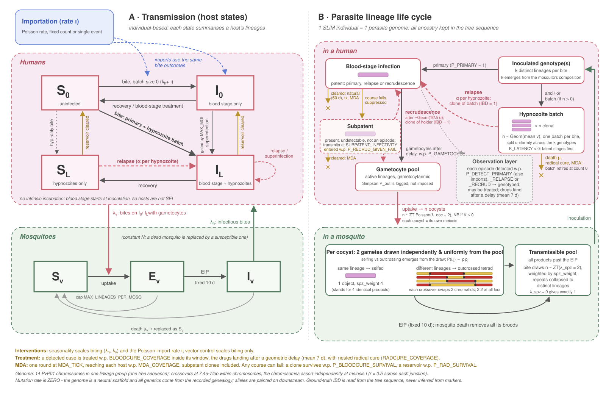
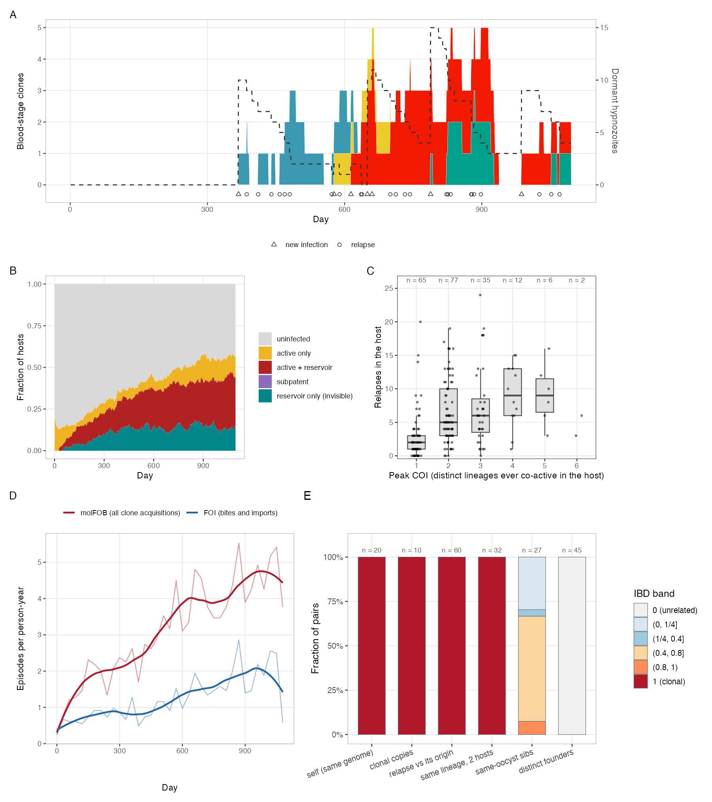
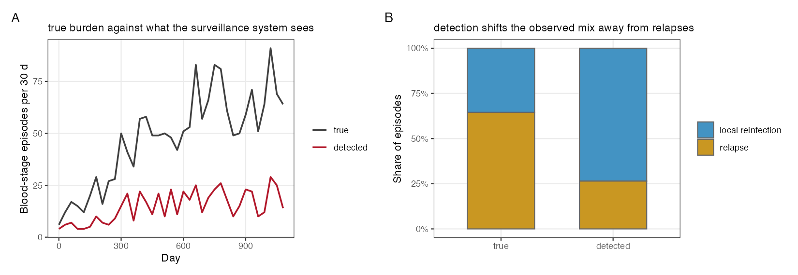

A forward, individual-based, genotype-resolved simulator of Plasmodium vivax transmission with an explicit hypnozoite reservoir, implemented in SLiM 5 (Eidos) with tskit tree-sequence recording and an R interface.
Engine: inst/slim/malariafwd_vivax.slim. Everything below was read from that file; where a default is quoted it is the shipped value.
Recurrence is three-state — relapse, reinfection and recrudescence (§9a) — and treatment is host-level with its own window (§9). Both are off at the shipped defaults, so a default run is an untreated, two-state-recurrence population. The terms and abbreviations used here, such as COI, molFOB, FOI, IBD, ARG, Rc and ν, are defined in the glossary (§16).
Four companion documents carry what this one does not: design decisions for why each choice was made, validation for how the model is checked, derived metrics for what each number a run yields means, and the roadmap for what is planned. The traps of the model script and its tree sequence are in the implementation notes.

A representative run — 200 hosts, 400 mosquitoes, 3 years, BITING_RATE 0.08, 40 founder hosts carrying 10 lineages, ν = 3. Over the second half of the run, as means over seeds 1 to 10 with their range: prevalence 0.33 (0.24–0.47), COI 1.26 (1.15–1.36), 21% polyclonal (12–27%), a reservoir of 1.1 hypnozoites per host (0.7–1.7), relapse fraction 0.62 (0.59–0.66) and 3.0 relapses per person-year at risk (2.4–3.9). The means sit inside the four calibration targets of §13. The figures below draw seed 1; dev/make-doc-figures.R, in the package’s source repository, makes them and writes these numbers to man/figures/representative-run.tsv.

A one host’s lineage trajectory, the host with the most relapses: each colour is a lineage, its band as tall as that lineage’s blood-stage clones (a relapse into a patent clone of its own lineage stacks on it, so the bands’ total can exceed the COI, which counts lineages); the dashed line, on the right axis, counts that host’s dormant hypnozoites, of every lineage; and the marks below show new infections (triangles) against relapses (circles) — and, on a run with treatment failure, recrudescences (diamonds). B population host-state composition over time — note the teal reservoir-only band, which is the “invisible reservoir”. C each infected host’s peak COI against the relapses it has over the run (boxes where at least 5 hosts reach that peak; every level labelled with its n). D molFOB vs FOI — the compound force of blood-stage clone acquisition against the force from bites and imports alone; the distance between the lines is the relapse contribution. (A recrudescence is a new episode but not a new clone, so it enters neither series; see §9a.) E the realised IBD ladder, as the composition of each relationship class across relatedness bands.
Panel D carries the central vivax transmission quantity: molFOB 3.7 vs FOI 1.4 new clones per person-year (means over the ten seeds; 2.6–5.6 and 0.9–2.1), so about three in five new blood-stage clones are relapses, and the gap widens through the run as the reservoir accumulates. Any method that reads new episodes as new transmission is reading the whole gap between the two lines as something it is not. (Panel E is deliberately a composition plot rather than a box: most relationship classes are point masses, while same-oocyst siblings spread out, in two groups around 0.6 and 0.2 of the genome, and this shows both. plot_relatedness_ladder(style = "points") gives the continuous view, and plot_relapse_km() the time from an infection to its batch’s first relapse.)

Ground-truth IBD read from the ARG, painted along the 14 PvP01 chromosomes. A relapse is clonal to its originating hypnozoite (IBD 1.00); two products of one oocyst share a mosaic with visible crossover breakpoints, a third of the genome on average for unrelated parents; distinct founders share nothing. Each pair is the one of its kind, in seed 1, whose IBD is nearest the kind’s mean in that run.
Demonstrating the observation layer. The same configuration rerun with P_DETECT_PRIMARY = 0.60 and P_DETECT_RELAPSE = 0.15 — relapses are often sub-patent, so a surveillance system sees them less often than primaries.

A true blood-stage episodes against detected ones, in seed 1. B the composition of each, over the second half of the run. The effect is not a uniform thinning but a reweighting: the true burden is 62% relapse / 38% reinfection (58–67% relapse over the ten seeds), while the detected line list reads 28% relapse / 72% reinfection (25–35%). Detection inverts the apparent mix, which is why any method that infers transmission from the observed origin split — Rc from case counts included — inherits a bias it cannot see.
At this transmission level outcrossing is uncommon — over the second half of the run 10.8% of uptakes are recombinant (6.4–14.2% over the ten seeds; 983 of 7,228 in seed 1) — so mosaics like the second panel are the exception and most pairs sit at 0 or 1. That is a model output, not a plotting limitation, and it is the same effect that makes relapse hard to distinguish genetically in low-transmission settings.
1. What the model is for
One SLiM individual = one parasite genome. Humans and mosquitoes are SLiM subpopulations; the individuals inside them are parasite lineages, not hosts. The whole genealogy is recorded in a tree sequence, so identity-by-descent is ground truth read from the ARG, never inferred from markers. However, realistic genomic data can be simulated and marker-specific genotypes can then be intersected and painted on that genealogy, with the truth behind every call (§14.4).
That combination — genotype resolution and a hypnozoite reservoir — is what the model exists for. It is built to answer questions of the form “what can genetic data recover about vivax recurrence, and where does that break down?”: relapse vs reinfection identifiability, the value of sequencing effort, reservoir dynamics under control, importation, and resurgence.
It is not a tool for predicting case counts, fitting incidence time series, or costing interventions. Detailed population-level vivax models (eg White et al. 2014, 2016; Mehra et al. 2024a; Champagne et al. 2022) and the individual-based model of White et al. (2018) do those far better and faster. See §12.
2. Scale and the tick cycle
Time advances in daily ticks. Each tick runs in this order:
| phase | what happens |
|---|---|
reproduction() |
hypnozoite activation (relapses) decided and seeded; cloning the second compartment of an import that arrived on the previous tick; biting, with human→mosquito uptake and meiosis and mosquito→human inoculation; recrudescences |
early() |
hypnozoite cleanup (cleared batches killed); the subpatent clones that recrudesced retired; the treatment courses that are due given; blood-stage clearance; mosquito death and replacement; an MDA round on MDA_TICK; importation |
late() |
state.tsv logging; the tree sequence at the end of the run |
reproduction() does not run on a day with no parasite, since SLiM calls it once per existing individual; that is why importation is seeded in early() (§2.1). Seasonality and vector control are not phases of their own: they scale the biting rate inside reproduction()’s bite loop, and the seasonal factor scales the import rate in early() (§9).
A run ends at SIM_DAYS, or earlier if it goes extinct or never starts. It goes extinct on the first tick on which no parasite is left in any host or mosquito, hypnozoites included, and no importation is still to come; every further tick would then be empty, so the run ends there. It writes the tree sequence; its events.tsv and state.tsv stop on that tick; and its params.tsv ends with the tick as EXTINCT_TICK (D5), also when the tick is SIM_DAYS itself. run_sim() then gives a message, and the run’s extinct_tick holds the tick; it is NA for a run that did not go extinct. The functions that summarise a window of a run take its length from SIM_DAYS, so the days after an extinction count as days with no parasite (D49). An importation is still to come until the run has passed the last day on which one can arrive, the pulse day or the import window’s last day inside the run (§8); a pulse or window that falls outside the run brings nothing. A window inside the run counts to its last day even while its rate is 0, as under a border closed by IMPORT_RATE_BOOST = 0, so a run that dies out meanwhile goes extinct only once that day has passed.
A founder-free run (N_FOUNDER_HOSTS = 0) starts only from its imports, and they can all fail to establish a parasite: by chance, through a Poisson rate that draws none or imports that take in neither compartment, or because the settings let none take, as with P_PRIMARY = 0 and a hypnozoite batch mean of 0, or an import rate that is 0 throughout its window. Such a run never starts. It ends on the first tick after its last import day, but not before tick 10, or on its last day if that comes first, and writes its outputs as an extinct run does. Unlike extinction, this is decided on the last day whatever the import schedule, so every run that never had a parasite is marked: its params.tsv ends with a NEVER_STARTED row, run_sim() says so, and the run’s never_started is TRUE (D5). Such a run holds no parasite: its tree sequence has no nodes, and its events are at most imports that did not take. Every function that reads a run takes it, with empty tables, zero counts or NA. A founder-free run with no import path inside it at all is refused before SLiM starts.
Ordering matters for one subtlety: a batch exhausted during reproduction() is retired by setting batch_count = 0, and killed by the cleanup pass at the top of early() in the same tick, so there is no activation lag. A batch emptied by radical cure or MDA, which run later in early(), stays until the next tick’s cleanup, and reproduction() skips it in between. (Retirement is recorded on the batch itself rather than in a global list, which sidesteps the Eidos scoping trap described in the implementation notes.)
Population sizes are fixed: N_HOSTS humans, N_MOSQ mosquitoes. A mosquito that dies is replaced by a susceptible one, so vector density is constant and there is no larval or density-dependent vector ecology.
2.1 Tick pseudocode
for each tick t:
reproduction():
# --- relapse ---
for each host h, for each dormant batch b in h:
if latency_stage(b) > 0: # K_LATENCY > 0
batch_count(b) <- batch_count(b) - Binomial(batch_count(b), mu) # latent death
if batch_count(b) == 0: retire b
else if runif(1) < DELTA_LATENCY: latency_stage(b) <- latency_stage(b) - 1
continue # no activation while latent, nor on the day b leaves latency
n_act ~ Binomial(batch_count(b), alpha_eff) # activation
n_die ~ Binomial(batch_count(b) - n_act, mu / (1 - alpha_eff)) # competing death
batch_count(b) <- batch_count(b) - n_act - n_die
if n_act > 0: seed ONE blood-stage episode, addCloned(b) # IBD = 1 to origin
if batch_count(b) == 0: retire b
# --- second compartment of an import that arrived on the PREVIOUS tick ---
for each queued import primary still alive:
clone its hypnozoite batch from it # IBD 1; see importation below
# --- biting ---
for each mosquito m:
if runif(1) >= biting_rate_eff(t): continue
h <- a uniformly chosen host
broods <- sampleTransmissibleMosqBroods(m) # n ~ ZT(LAMBDA_SPOROZOITES), past the EIP
if m infectious and blood_stage_lineages(h) < MAX_MOI: # patent, subpatent, or gained today
if runif(1) < P_TRANS_VH:
inoculateMosquitoToHuman(broods, h) # ONE Geom(nu) batch, split over k
if h infectious and runif(1) < P_TRANS_HV: # by a clone it held before today
if active_lineages(m) < MAX_LINEAGES_PER_MOSQ:
seedBroodFromHuman(m, h) # n ~ ZT(LAMBDA_OOCYSTS) meioses
# --- recrudescence ---
for each suppressed clone whose delay has run out:
seed ONE blood-stage episode, addCloned(the holder) # IBD = 1 to the holder, which retires
early():
kill every dormant batch with batch_count == 0 # cleanup, same tick
retire each subpatent clone that recrudesced this tick
give each treatment course that is due # before natural clearance
for each active blood-stage lineage:
if runif(1) < P_BLOOD_CLEAR: clear it
kill mosquitoes w.p. MU_MOSQ; replace each as susceptible
if t == MDA_TICK: give a course to each host w.p. MDA_COVERAGE # subpatent clones too
# --- importation ---
n_imp <- (N_IMPORTS if t == IMPORT_TICK)
+ (N_IMPORTS_PER_TICK + Poisson(import_rate_eff(t)) if IMPORT_START <= t < IMPORT_END)
# import_rate_eff(t): IMPORT_RATE_PER_TICK times the seasonal factor that
# biting_rate_eff(t) applies to BITING_RATE (not its vector-control factor), and
# IMPORT_RATE_BOOST from the trigger
pick min(n_imp, N_HOSTS) distinct hosts uniformly at random # at most one import per host
a host already carrying MAX_MOI blood-stage lineages takes none # vh_inoculation_import_no_take
for each other host: roll primary and batch as a bite does, and if either takes, mint an
unrelated founder genotype and move it in (vh_inoculation_import_no_take if neither)
queue the hypnozoite batch of each import that took both, to be cloned next tick
late():
write state.tsv # and the tree sequence at the endImportation is seeded in early(), not reproduction(): SLiM calls reproduction() once per existing individual, so an empty parasite population would never run it and the import could never land. A genome can only be minted outside reproduction() via addSubpop(), so an import is created in a disposable subpopulation and moved into its host with takeMigrants(). Its hypnozoite batch must be a clone of that genome to be IBD 1 to it, and SLiM refuses to clone a genome minted on the same tick, which is why the second compartment waits one tick.
3. Human hosts
Hosts carry a set of parasite lineages and are summarised by four states (panel A of the model structure figure at the top of this page):
| state | meaning |
|---|---|
| S0 | uninfected, no reservoir |
| I0 | blood-stage infection, no reservoir |
| SL | hypnozoites only — invisible to blood surveys |
| IL | blood stage and hypnozoites |
No intrinsic incubation. Blood stage begins at inoculation, so hosts are not SEI. Liver-stage development time (~9 days in reality) is not represented in the current model, but will be implemented in future.
No immunity. There is no acquired blood-stage, anti-parasite, pre-erythrocytic or transmission-blocking immunity, and no age structure. This is a deliberate scope decision for the first version of the model: immunity would confound the genetic signals the model exists to measure, and vivax immunity parameters are poorly identified. It is the single largest simplification in the model (§11, and the roadmap), but future versions will explore lineage-specific immunity and exposure-related immunity (e.g. age structure/heterogeneity).
Blood-stage duration is geometric: each patent clone clears independently each day with probability
P_BLOOD_CLEAR = 1 / MEAN_BLOOD_STAGE_DURATION # = 0.01667 at 60 days: mean duration 60 daysThis is White et al. (2014)’s clearance rate r = 1/60 per day, used as a daily probability.
There is no age ceiling: an untreated clone ends only by this daily draw. Clearance is per clone, so a polyclonal host loses its clones independently and MOI decays rather than collapsing at once. A clone cannot clear on the day its blood stage began, and a subpatent clone makes no draw (§9a).
Superinfection is allowed and gated by MAX_MOI = 20, which is at least 1 (1 means no superinfection). The gate is the same for every new inoculation, a local bite or an import: a host already carrying MAX_MOI blood-stage lineages, patent or subpatent, has the whole inoculation skipped — primary and hypnozoite batch, so the reservoir also stops being topped up — whether or not those lineages are infectious (at SUBPATENT_INFECTIVITY = 0 subpatent clones are not). The check comes before the bite’s P_TRANS_VH draw, and counts the clones the host gained earlier the same day, by a relapse or a bite. Relapses bypass the gate entirely, so realised MOI can exceed it; so can a bite that delivers several genotypes, which the gate admits whole, and a founder host’s copy of another founder’s genome (D40). At 20 it is a runaway guard that essentially never binds (COI is typically 1–3); set it low and you are measuring the cap, not the biology.
4. Mosquitoes
Standard Sv → Ev → Iv, with:
-
Biting:
BITING_RATE= 0.1 is the per-mosquito daily biting probability. The Ross–Macdonald per-human rate isma = BITING_RATE × N_MOSQ / N_HOSTS, not this value directly — a frequent source of confusion when comparing to the literature. -
Transmission probabilities:
P_TRANS_VH= 0.5 (b, bite infects human),P_TRANS_HV= 0.5 (c, mosquito infected by biting an infected human). -
Lifespan: geometric, mean
MOSQ_LIFESPAN= 10 days (daily death probability 1/10). -
EIP: fixed at
EIP_DAYS= 10 days — not temperature-dependent, not distributed. -
Carrying capacity:
MAX_LINEAGES_PER_MOSQ= 20 lineages; uptake is skipped above it. No fitness cost of burden (mortality and transmissibility do not decline with parasite load).
Mosquito death removes all of its broods and parasite lineages, so a mosquito is a hard transmission bottleneck. Every mosquito starts uninfected: the founders are hosts (§3).
4.1 Mapping to Ross–Macdonald quantities
m = N_MOSQ / N_HOSTS # vector-to-host ratio
a = BITING_RATE # per-mosquito daily biting probability
ma = BITING_RATE * N_MOSQ / N_HOSTS # bites per human per day
s = fraction of mosquitoes with >= 1 transmissible (post-EIP) brood
EIR = ma * s * 365 # infectious bites per person-year
MU_MOSQ = 1 / MOSQ_LIFESPAN # daily mosquito mortalityEIR is emergent, not a parameter, and state.tsv counts it: infectious_bites on a host’s row is the number of bites the host received that day from a mosquito carrying a product past the EIP, whatever the bite then did (§14.2), so the EIR is their sum over hosts and days divided by person-years, N_HOSTS times the days over 365; summarise_run() reports it over its window as eir_per_py. The formula above, with s read from state.tsv as the share of mosquitoes with n_transmissible > 0, gives about 1 − 1/MOSQ_LIFESPAN of it (about 0.9 at the default 10 days), because the snapshot is taken after the day’s mosquito deaths; it also assumes a constant biting rate, so with seasonality, vector control or a boost its error can go either way. Use the count.
Seasonality modulates the biting probability:
biting_rate_eff(t) = BITING_RATE * (1 + SEASONAL_AMP * cos(2*pi*(t - SEASONAL_PHASE)/365))clamped at ≥ 0, with SEASONAL_PHASE the day-of-year of the peak (the curve is a cos; a sin would put the peak ~91 d later, D36). SEASONAL_AMP is non-negative and 0 means no seasonality; ≈ 0.85 gives strong annual peaks swinging biting between roughly 0.15× and 1.85× the mean.
Scale warning.
madepends on the ratioN_MOSQ / N_HOSTS, so scaling hosts and mosquitoes together leaves it unchanged, while changing one without the other changes transmission. Even at a fixed ratio, prevalence and COI depend on scale, through the numbers of founders and imports and through chance fade-out, which is stronger in a small population: a biting rate calibrated at 150 hosts need not transfer to 400 hosts. Calibrate at the scale you intend to publish.
5. The hypnozoite reservoir
Follows the White et al. 2014 batch model.
- Each transmitted genotype may cause an active primary infection with probability
P_PRIMARY= 1.0 (White’s base model treats this as certain given successful inoculation), and independently establishes a batch of hypnozoites. -
Batch size is geometric with mean
NU_HYPNOZOITE_BATCH(ν), 3 by default (§13). The batch is drawn once per bite and split uniformly across the co-inoculated genotypes, matching White’s per-bite parameterisation (§12). Both, either, or neither of primary and batch can occur for a given genotype. - Founder hosts are seeded with a blood-stage clone and no batch: a founder carries hypnozoites only once a bite or an import gives it a batch.
-
Activation: each hypnozoite activates at
ALPHA_ACTIVATE= 1/170 per day, an average carriage of about 170 days (Mehra et al. 2024b, as Mehra & Taylor 2026 use it; White et al. 2014 estimate 1/332). An activation produces one blood-stage clone representing however many clonal hypnozoites activated that tick. -
Death:
MU_HYPNOZOITE= 1/442 per day (as in Mehra et al. 2024a, who credit White et al. 2014, whose table gives 1/425), competing with activation. -
Latency:
K_LATENCY= 0 (tropical) or 2 (temperate), withDELTA_LATENCY= 1/100 governing progression when enabled; latent hypnozoites die atMU_HYPNOZOITEtoo, as in White et al. 2014. -
No age ceiling: a batch empties only by activation and death, as in White et al. (2014), so the long late-relapse tail survives;
MU_HYPNOZOITEmust be above 0 so every batch ends.
A relapse is a clone of its originating hypnozoite (addCloned), so relapse-to-origin IBD is exactly 1. Relative to a host’s prior observed infection it can be clonal, sibling, half-sibling or unrelated — which is a useful feature of the model to explore relapse identifiability.
A relapse can start while a patent clone of its own lineage is still in the host, most often the primary from the same bite or an earlier relapse of the same batch: at the defaults about 80% of relapses do. Such a relapse is logged and counted like any other, as a new episode and a new acquisition, and the lineage stays patent in the host until all its clones have cleared. It is drawn for detection like any other relapse, so the observation layer can report it, put it on the observed line list and schedule a course for it; at the default P_DETECT_RELAPSE = 1 every one is reported. A real observer would see only the infection already there, not a recurrence or a new clone. Its hypnozoite_activation row has into_patent_lineage = 1 (§14.1), and exclude_masked = TRUE on classify_cases(), relapse_fraction() and force_of_infection() leaves it out. The flag looks only at clones born on earlier days: a relapse that starts on the same day as another clone of its lineage in the host (another batch waking, a recrudescence or a bite) is not flagged for that clone, so two batches of one lineage that wake together, with no earlier clone of it in the host, are both 0.
Structural consequence worth stating explicitly. Because the batch is divided among the genotypes that establish primaries, and
P_PRIMARY= 1, reservoir genotypes are a subset of blood-stage genotypes: no relapse can raise a genotype the host’s blood did not carry at that bite. A bite that delivers several genotypes seeds hypnozoites of each of them, so a relapse can differ genetically from the clone it follows without a second bite; atLAMBDA_SPOROZOITES= 0, one genotype a bite, that needs separate bites. This is a known limitation; see assumption 5 in §11 and the first entry in the roadmap.
5.1 Formal specification
Batch size. N ~ Geometric(ν) on the non-negative integers:
P(N = n) = 1/(1 + nu) * (nu / (1 + nu))^n , n = 0, 1, 2, ... E[N] = nuSo a non-trivial fraction of bites deposit no hypnozoites at all: P(N = 0) = 1/(1 + ν) — 25.0% at ν = 3, 16.7% at ν = 5, 11.1% at ν = 8.
Activation and death are competing risks applied daily, per hypnozoite, with activation drawn first and death drawn from the survivors, so that each day a hypnozoite activates with probability alpha and dies with probability mu:
n_act ~ Binomial(batch_count, alpha)
n_die ~ Binomial(batch_count - n_act, mu / (1 - alpha))A hypnozoite’s fate is therefore settled after a geometric time, with
P(activate rather than die) = alpha / (alpha + mu)
E[time to either event] = 1 / (alpha + mu)At the defaults ALPHA_ACTIVATE = 1/170 and MU_HYPNOZOITE = 1/442:
| quantity | value |
|---|---|
| α + μ | 0.008145 /day |
| P(activate rather than die) | 0.722 |
| mean time to activation-or-death | 122.8 days |
| expected relapsing hypnozoites per bite at ν = 3 | 2.17 |
| …at ν = 5 | 3.61 |
| …at ν = 8 | 5.78 |
Note the relapse/hypnozoite distinction. Multiple hypnozoites in the same batch activating on the same tick collapse into one relapse, a single blood-stage clone (they are clonal, so they are genetically one thing). The expected number of relapses is therefore lower than the 2.17 relapsing hypnozoites per bite at the default ν = 3, and depends on batch size — a larger batch yields more simultaneous activations and so proportionally fewer relapses per hypnozoite. This is why relapse rate is not linear in ν.
Temperate latency. With K_LATENCY = k > 0, a new batch must pass k latency stages before its hypnozoites can activate, producing the long-latency phenotype (D25). Each day every latent hypnozoite dies with probability μ, as in White et al. (2014), and then the batch moves on to the next stage with probability δ = DELTA_LATENCY. The batch moves through latency as one unit, as White et al. also track latency per infection. A hypnozoite therefore survives each stage with probability δ(1 − μ) / (1 − (1 − δ)(1 − μ)), close to δ / (δ + μ), and
P(relapse) = [δ(1 − μ) / (1 − (1 − δ)(1 − μ))]^k × α / (α + μ)which is 0.480 at K_LATENCY = 2, DELTA_LATENCY = 1/100 and the shipped α, μ, against 0.722 without latency. Without deaths a batch would stay latent k / δ days on average (200 at k = 2). Because latent hypnozoites die, survival favours the batches that move through latency quickly: a hypnozoite that leaves latency alive, as every relapse must, has been latent k / (1 − (1 − δ)(1 − μ)) days on average, 163 at k = 2, δ = 1/100 and the shipped μ. Its relapse follows 1 / (α + μ) days later on average, so about 286 days after the bite at k = 2. A batch does not activate on the day it leaves latency. K_LATENCY = 0 (tropical) makes activation immediately eligible.
Resurgence boosts. From RESURGENCE_TRIGGER_TICK, alpha_eff = ALPHA_ACTIVATE × ALPHA_ACTIVATE_BOOST (clamped so alpha_eff <= 1 - mu) and nu_eff = ν × NU_HYPNOZOITE_BATCH_BOOST.
6. The mosquito stage: uptake, meiosis, sporozoites
This is where the genetics are generated.
Uptake. A successful blood meal forms n ~ zero-truncated Poisson(LAMBDA_OOCYSTS) oocysts (negative binomial if K_OOCYSTS > 0, var = λ + λ²/K). Each oocyst is an independent meiosis with its own oocyst_id; all oocysts from one meal share a brood_id.
λ is the PRE-truncation rate, not the mean count. Conditioning away the zeros pulls the realised mean up: λ = 1 → 1.58, λ = 2 → 2.31; with K = 1, λ = 2 → 3.0. Use
uptake_moments()/uptake_calibrate()to convert between a literature target and λ. Zero-truncation (not inflation) is correct becauseP_TRANS_HValready decides whether the event succeeds — allowing zeros would count failure twice.
Gamete draw. Each oocyst draws two gametes independently and uniformly from the host’s gametocyte pool. Selfing vs outcrossing emerges from whether the two happen to share a lineage; it is not rolled as a coin flip. This reproduces P(outcross) = 1 − Σpᵢ² as a marginal and gives the correct pairing P(i,j) ∝ pᵢpⱼ (Wong et al. 2018); rolling outcrossing first and then picking two distinct lineages would give the marginal but not the pairing.
Meiosis. An outcrossed oocyst yields a full tetrad by per-chromosome four-strand meiosis (D14): the zygote’s two genomes replicate into four chromatids per chromosome, and each chiasma joins a chromatid carrying one parent’s sequence with one carrying the other’s, both chosen at random. Meiosis I sends the two chromatids that carry the same parent at a chromosome’s centromere to the same pole, drawn independently for each chromosome, and meiosis II gives one to each product of that pole; so the four products form two pairs of meiosis II sisters, the same pairs on every chromosome — consistent with the tetrad recombination described in single-cell sequencing work (Nkhoma et al. 2020; §6.2). Every product carries the full map of crossovers. On the full 14-chromosome map none is a copy of a parent; with a CHROMOSOMES subset or a small RECOMB_RATE, a product with no switch is a copy of its parent and keeps that parent’s lineage. A selfed oocyst yields four identical products, stored as one object with spz_weight = 4 — a storage optimisation that keeps object count from scaling with clonal output, corrected for at sampling.
Gametocyte gating. A blood-stage infection is transmissible only from gametocyte_ready_tick = start + GAMETOCYTE_DELAY and only if it carries gametocytes (per-infection Bernoulli, P_GAMETOCYTE). Defaults are the identity (0 and 1.0). Vivax gametocytes appear early — at or near symptom onset, unlike ~10–12 d in falciparum (Bousema & Drakeley 2011; Koepfli et al. 2021) — so a realistic preset is a short delay plus high carriage (≈3 and ≈0.9).
Inoculation. A bite draws n ~ ZT(LAMBDA_SPOROZOITES) products from everything past the EIP, weighted by spz_weight, then collapses repeat draws to one object per distinct lineage.
LAMBDA_SPOROZOITESdefaults to 2, so a bite samples 2.31 products on average and delivers several genotypes, co-transmitted, whenever it draws more than one lineage the mosquito carries; the table in §13 gives the share of bites that do at each ν of the calibration. At 0, whichdrawZTCountmaps to exactly 1, every bite delivers exactly one genotype, whatever the mosquito carries. No study has measured the genotypes a natural bite delivers, so the default is potentially an assumption to sweep (the roadmap), however the draw implemented here is sensible.
6.1 The zero-truncated count distributions
Both LAMBDA_* parameters feed drawZTCount(lambda, k):
lambda <= 0 -> returns exactly 1 (the shipped default)
k <= 0 -> X ~ ZT-Poisson(lambda)
k > 0 -> X ~ ZT-NegBinomial, i.e. Poisson(Gamma(lambda, k)) rejected until > 0ZT-Poisson pmf and realised mean:
P(X = x | X > 0) = lambda^x * exp(-lambda) / (x! * (1 - exp(-lambda))) , x = 1, 2, ...
E[X | X > 0] = lambda / (1 - exp(-lambda))| λ | realised mean |
|---|---|
| 1 | 1.582 |
| 2 | 2.313 |
| 3 | 3.157 |
| 4 | 4.075 |
| 5 | 5.034 |
The negative-binomial case has var = λ + λ²/K, so Poisson is the K → ∞ limit and the NB option is a strict superset. Use uptake_moments(lambda, k) to see what a setting produces and uptake_calibrate(mean, var) to invert a literature target.
Zero-truncation, not zero-inflation.
P_TRANS_HV/P_TRANS_VHalready decide whether the event happens at all, so the zeros in a membrane-feeding dataset are already represented; inflating here would double-count them. Between-donor gametocytaemia variation is likewise already emergent.K_OOCYSTStherefore captures only residual within-feed overdispersion.
6.2 Tetrad genetics and the expected IBD ladder
Every oocyst produces four meiotic products. For an outcrossed oocyst each is a mosaic of the two parents. Chiasmata fall at Poisson points, twice the per-product map length per bivalent, and each joins a random chromatid of each parent at that locus; every crossover is reciprocal, the two chromatids exchanging everything beyond it. Meiosis I then keeps together the two chromatids that carry the same parent at the chromosome’s centromere, and meiosis II separates them. The centromeres are those of the PvP01 annotation (PVP01_CEN01–PVP01_CEN14, Sanger/GeneDB, released with Auburn et al. 2016). So at every locus two of the four products carry each parent’s allele (2:2 segregation), each chromosome assorts independently, every product carries the documented 17.9 M of within-chromosome crossovers, and the products form two pairs of meiosis II sisters.
Expected IBD, used throughout as a validation ladder:
| pair | expected IBD | note |
|---|---|---|
| a lineage with itself / a clone | 1.000 | verified exact |
| relapse vs its originating hypnozoite | 1.000 |
addCloned; verified |
| any two products of one oocyst | 1/3 on average | for unrelated parents; 1/3 + 2f/3 when the parents share a fraction f |
| meiosis II sisters (2 of the 6 pairs) | ~0.60 | the same parent at every centromere |
| the other pairs of one oocyst (4 of 6) | ~0.20 | opposite parents at every centromere |
| full siblings (same two parents, different oocysts) | 1/2 | |
| half siblings (one parent shared) | 1/4 | |
| unrelated founders | 0 | independent roots |
With all 14 chromosomes and unrelated parents the same-oocyst distribution is bimodal: sisters around 0.60 and the other pairs around 0.20 (overall sd about 0.20, 5–95% about 0.12–0.67). Meiosis I pairs the products alike on every chromosome, so a pair’s sharing is correlated across chromosomes; a random deal of chromatids per chromosome, as in Wong et al. (2018), would make every pair look alike, around 1/3 (sd about 0.08). On the full map no pair shares nothing; on a single chromosome the distribution is far wider.
Sequenced meioses show this pairing. Nkhoma et al. (2020) sequenced P. falciparum infections cell by cell and captured a complete tetrad, the four products of one meiosis (their Figure 6). Read against the 3D7 centromere annotation, its products form two pairs that carry the same parent at all 13 centromeres that can be read, and its sisters share 0.67 of the genome and the other pairs 0.17. In the paper’s other sibling groups (its Data S3), six more pairs of cells carry the same parent at every centromere that can be read. These readings are ours, from the published figures (D14). The same tetrad also shows two tracts of gene conversion, 872 bp at the right end of chromosome 2 and 181 kb at the left end of chromosome 4, which the model leaves out (assumption 19).
6.3 Recombination
within-chromosome crossover rate: 7.4e-7 per bp (13.5 kb/cM; euchromatic core rate)
at each of the 13 chromosome junctions: r = 0.5 (independent assortment)The 14 chromosomes are concatenated into one linkage group, with r = 0.5 in SLiM’s map at each junction. seedTetrad() discards the junction draws and assorts the chromosomes itself, by meiosis I at each centromere, which gives every product exactly r = 0.5 across each junction. This is genetically equivalent to explicit multi-chromosome simulation for every IBD quantity the package reports, and keeps a single .trees file — explicit SLiM multi-chromosome writes a directory of per-chromosome tree sequences, which would require rewriting the entire IBD pipeline. In the tree sequence a shared stretch can continue across a junction, when both genomes carry the same parent on both sides of it; the IBD functions cut every segment at the junctions (D18), and code that reads tskit’s segments directly must do the same, with chrom_map().
7. Genome and genetics
- PvP01 reference (Auburn et al. 2016; GCA_900093555), 14 nuclear chromosomes.
- Implemented as one concatenated linkage group with 7.4 × 10⁻⁷ /bp within chromosomes (13.5 kb/cM, euchromatic core rate, Jiang et al. 2011); the chromosomes assort independently at meiosis (§6.3). Genetically equivalent to explicit multi-chromosome for every IBD quantity the package reports, and keeps a single
.treesfile. -
GENOME_MODEis a pure coordinate switch:"full"(24.2 Mb, default) or"core"(subtelomere-masked, ~21.8 Mb). Both use the same recombination rate. -
initializeMutationRate(0.0)— the genome carries no mutation at all. It is a neutral scaffold; all genetics come from the recorded genealogy. At every position each genome descends from exactly one root genome, a founder template or an import, andsimulate_genotypes()paints alleles on the root genomes from a panel’s PLAF, so each genome carries its root genome’s allele (§14.4). This is a strength for IBD (ground truth, no ascertainment) and a limitation for anything needing sequence divergence or selection. However, future work will extend this model so that mutations can be overlayed (backwards-simulated) using msprime/tskit to generate ‘realistic’ genome data.
The genealogy is often a forest, not a tree. Founder lineages have independent roots and ~93% of pairs never coalesce. Consequently tskit branch-mode divergence is not a relatedness measure here — use the IBD functions, not
diversity()/divergence()until model updates are released.
Reading the tree sequence yourself has two traps: about half of ts.samples() are SLiM’s vacant placeholder nodes and must be filtered out, and tskit’s ibd_segments() rows are pieces of paths through the trees, to be merged by ancestor and cut at the junctions (§6.3). The package’s IBD and ARG functions do both; the implementation notes give each trap in full.
8. Importation
Three mechanisms, additive:
| parameter | behaviour | modifiers |
|---|---|---|
IMPORT_RATE_PER_TICK |
genuine Poisson arrival rate between IMPORT_START/IMPORT_END — the realistic “leaky border” |
the seasonal factor of biting (§9), floored at 0, and IMPORT_RATE_BOOST from RESURGENCE_TRIGGER_TICK
|
N_IMPORTS_PER_TICK |
deterministic floor, between IMPORT_START/IMPORT_END
|
none |
IMPORT_TICK / N_IMPORTS
|
single pulse event | none |
The rate follows the season because travel, or transmission where the travellers were infected, can follow the same season. Local vector control (INTERVENTION_*) does not scale imports, which are infections acquired elsewhere; a border measure is IMPORT_RATE_BOOST or the import window itself (D37). The fixed count and the pulse are values the user sets directly, so nothing scales them.
Imports use the same bite outcomes as local transmission (primary and/or batch) and are labelled is_imported, which is carried through to relapses so an imported relapse is a distinct truth category. They go to hosts chosen uniformly at random, as bites do, so an import can land in a host that already carries a clone (D40). A host already carrying MAX_MOI blood-stage lineages, patent or subpatent, takes none, as for a local bite (§3), and the refusal is logged as vh_inoculation_import_no_take. Each host takes at most one import a day, so a day’s imports beyond N_HOSTS are dropped. vivax_params() warns when a day’s fixed imports inside the run exceed N_HOSTS (N_IMPORTS on IMPORT_TICK, N_IMPORTS_PER_TICK in the window, or both on the same day), and when IMPORT_RATE_PER_TICK at its peak over the window, with its seasonal and resurgence multipliers and with N_IMPORTS_PER_TICK, draws more than N_HOSTS imports on a day with probability above 0.01. Imports arrive in early(), which first runs on day 1: a pulse can fall on any day from 1 to SIM_DAYS, and a window brings imports on its days from max(1, IMPORT_START) to min(IMPORT_END − 1, SIM_DAYS); a pulse or window outside the run brings nothing. A day-1 pulse lands alongside the founders, with one difference from other days: a founder host that carries a copy of another founder’s genome is still empty on day 1, so it takes an import even at MAX_MOI = 1 (D40). A naive population seeded only by imports is N_FOUNDER_HOSTS = 0 with an import path on a day of the run.
Limitation: imported genotypes are drawn as unrelated founders — there is no structured source population, so imports are maximally distinguishable from local parasites. A structured source pool is planned (the roadmap).
9. Interventions and the observation layer
Interventions (all off by default):
-
Vector control / seasonality scale biting. Seasonality is
BITING_RATE × (1 + SEASONAL_AMP·cos(2π(t − SEASONAL_PHASE)/365)), withSEASONAL_PHASEthe day-of-year of the peak. -
Case management has its own window,
TREATMENT_START/TREATMENT_END(default: the whole run).INTERVENTION_*is vector control only: it scales biting, not importation (§8, D37), and does not touch treatment (D30). The window gates the decision, not delivery: a case detected on the programme’s last day still completes its course afterwards. -
Case-based blood-stage treatment (
BLOODCURE_COVERAGE) is decided where a case arises and applied to the host later: each day after the case the course arrives with probability 1/TREATMENT_DELAY, so the delay is at least one day with meanTREATMENT_DELAY(7 by default). It clears every patent blood-stage clone the patient carries, not one lineage (D31). One course at a time per host; a treated case stays infectious until the drugs land. A course can never land on the tick the case arises — the minimum,TREATMENT_DELAY = 1, means the next day — because a clone that became patent this tick cannot yet have caused symptoms (D32). -
Case-based radical cure is nested inside a blood-stage course:
RADCURE_COVERAGEis P(radical cure | treated), so it is inert unlessBLOODCURE_COVERAGE > 0— primaquine is never given without a schizonticide (D31). Liver-stage only; it deliberately does not clear the current blood-stage infection. Efficacy is per person by default (RADCURE_MODE = "person", one all-or-nothing draw atP_RAD_SURVIVAL = 0.29, ~71% cure, near the 70% effectiveness White et al. (2018) assume for a 14-day primaquine course, given poor adherence).RADCURE_MODE = "hypnozoite"thins each hypnozoite independently — the only mode that can partially clear a reservoir, and so the only one that reshapes post-treatment relapse diversity. -
Treatment failure has consequences (D33). A clone that survives a course either persists at full density (
bloodcure_persist) or, with probabilityP_RECRUD_GIVEN_FAIL, is suppressed below patency (bloodcure_subpatent) and later re-expands as a recrudescence, unless an MDA round clears it first. See §9a. - No post-treatment prophylaxis (ongoing work). A course clears what is there and then stops: it leaves behind no period of drug protection, so a treated host can be reinfected, or relapse, the very next day. Real schizonticides protect for weeks — chloroquine for roughly a month — and radical cure additionally blocks new hypnozoite batches for a time. The consequence is that recurrence is overstated in any scenario with appreciable treatment coverage, and short recurrence intervals most of all. The design is settled (protection that wanes after each course, with a blocked relapse still consuming its hypnozoites, bites still seeding batches, and imports and recrudescences bypassing protection) and implementation is planned for the next release.
-
MDA (
MDA_TICK) is one round of the case-management course — blood-stage drugs plus radical cure — given through the sameapplyTreatment(), so it honoursRADCURE_MODEand can suppress clones subpatent. The round reaches each host with probabilityMDA_COVERAGE(D35). The draw is made only for hosts not empty at the round, but does not depend on infection, so the coverage is that of the whole population;mda_bloodcure_givenandmda_radcure_givencount the courses to those hosts. Because MDA waits for no symptoms, it reaches two kinds of clone a case course does not: a clone that became patent earlier that day (the day’s imports arrive after the round, §2.1), and a subpatent clone, which it clears with probability 1 −P_BLOODCURE_SURVIVAL, cancelling its recrudescence (mda_subpatent_clear); a subpatent clone that survives keeps its schedule (D35). A round comes on day 2 or later when a founder host carries a copy of another founder’s genome (D40). Unlike case-based treatment it is not gated onTREATMENT_START/TREATMENT_END. -
Resurgence triggers from
RESURGENCE_TRIGGER_TICK: multiplicative boosts on biting (BITING_RATE_BOOST), activation (ALPHA_ACTIVATE_BOOST), batch size (NU_HYPNOZOITE_BATCH_BOOST) and imports (IMPORT_RATE_BOOST) — so one scenario can run a quiet baseline and then switch on a single mechanism.
Observation layer. A true episode becomes a detected (reported, genotyped) case with probability P_DETECT_PRIMARY / P_DETECT_RELAPSE / P_DETECT_RECRUD, drawn once per bite (for all the genotypes it delivers), per import, per activation or per recrudescence — not per co-inoculated genotype, so one bite cannot be “detected and treated” for one of its genotypes and not the other (D29). Relapses are often sub-patent, so a realistic setting is much lower for them (e.g. 0.15); Ross et al. (2025) put recurrence detectability at 0.13–0.49 of a primary, so P_DETECT_RECRUD should usually sit well below P_DETECT_PRIMARY. Detected cases form the observed line list and can trigger case-based treatment. A bite that seeds only hypnozoites (possible when P_PRIMARY < 1) makes no blood stage, so it is no case and gets no course (D29), as for an import.
Known gap: detection is not origin-dependent beyond the primary/relapse split, so active vs passive surveillance modes cannot be distinguished.
9a. Recurrence and persistence: relapse, reinfection, recrudescence
A recurrence in P. vivax has several possible causes, and the model represents all of them.
| state | mechanism | genome |
|---|---|---|
| reinfection | a new mosquito bite, or an importation | a new genome, unrelated or related only through the local population |
| relapse | a hypnozoite activates from the liver | a new genome, clonal to the inoculation that seeded the batch |
| recrudescence | a clone that survived a treatment course re-expands to patency | a new genome, clonal to the holder it came from |
| persistence | a clone that was never cleared: a patent clone clears only by its daily draw (§3), and a subpatent one makes no draw at all | no new genome — the clone already in the host |
Only the first three are recurrences, and only they begin a clone, so classify_cases() labels those three and imports; persistence has no origin of its own, because nothing is acquired. It is in the table because a later blood sample cannot tell it from a recurrence.
A relapse that starts while a patent clone of its own lineage is still in the host is a relapse too, and the observation layer can report it, but a real observer could not see it as a recurrence (§5).
The mechanism. When a blood-stage course fails on a clone (w.p. P_BLOODCURE_SURVIVAL), that clone either carries on at full density, or — w.p. P_RECRUD_GIVEN_FAIL — is suppressed below patency. A suppressed clone is still present but is not an episode: it does not count toward moi_active, it cannot be detected, and a later case course does not reach it; an MDA round does (§9). After a delay it re-expands, logged as recrudescence.
Natural clearance while subpatent is off by design, so every suppressed clone eventually recrudesces unless an MDA round clears it first. P_RECRUD_GIVEN_FAIL is P(suppressed | the course failed), and without MDA it is exactly P(recrudescence | the course failed) — which maps directly onto a WHO therapeutic-efficacy failure rate.
The delay is geometric with mean MEAN_RECRUD_DELAY = 10.5 d and at least one day (each day after the suppression the clone re-expands with probability 1/10.5), selectable via RECRUD_DELAY_DIST ("geometric", "poisson", "fixed"). Geometric is the discrete analogue of the Exponential that Taylor et al. (2019) fit — their own simulator draws round(rexp(1, 1/10)). The mean of 10.5 d is a literature assumption, pending parameterisation: it is the reciprocal of Taylor et al.’s posterior median (0.095 a day), but they fix the rate with a strongly informative Gamma(100, 1000) prior (mean 0.1 a day) for identifiability, and the posterior barely moves from it, so it is not an estimate from data. This will be varied in sensitivity analyses (the roadmap). At 10.5 d the median gap is 7 d, and ~94% fall within day 28. See D32 and D34.
A recrudescence mints a new genome (addCloned from the holder, which is then retired), as a relapse does. That keeps one episode to one pedigree_id, gives the recurrence its own ARG node dated at the recurrence rather than at the original inoculation, and makes “IBD = 1 to the prior episode” a real measurement rather than a self-pair. Because the mint inherits lineage_id, retire-plus-mint is exactly MOI-neutral. See D33.
A case, but not an acquisition. This distinction propagates through the metrics, and it is the easiest thing to get wrong:
- It is a new clinical episode, so
classify_cases()gives it a fourthoriginand it appears in case counts, incidence and host timelines. - It is not a newly acquired parasite — the genotype was already in the host — so it is excluded from the force-of-infection rates.
force_of_infection()returns it as its own row withis_acquisition = FALSE; sum only the acquisition rows for FOI or molFOB. -
relapse_fraction()therefore reports two readings, both counted per clone onset:relapse_frac_acquisitions, relapses over acquisitions (the unit of the relapse-fraction calibration target, §13), andrelapse_frac_episodes, relapses over every case, recrudescence included. -
rc_by_origin(unit =)likewise:"episode"credits onward transmission to the recurrence,"acquisition"walks it back to the infection that brought the clone in. Onward transmission includes the relapses an infector’s bites cause in other hosts (transmission_links()).
Worth noting that a real molFOB, measured by comparing genotypes between study visits, would often count a recrudescence or persistence as a new clone — the clone was undetectable at the previous visit. The gap between the two sums estimates that bias.
Subpatent clones and transmission. Patency and infectiousness are separate properties. A suppressed clone is undetectable but still transmissible at SUBPATENT_INFECTIVITY (0.15 by default; 0.035–0.10 in the individual-based model of White et al. 2018; 0.10–0.20 from the mosquito-feeding studies compiled by Koepfli et al. 2021, their Fig 5, in which microscopy-positive carriers are 5–10× more infective than submicroscopic ones, a P. vivax study in Brazil the exception). The model therefore keeps three lineage counts: patent (moi_active, episodes), transmissible (the host’s infectious state and the bite loop) and present at all (the MAX_MOI capacity check); see D11.
Inert at the shipped default. P_RECRUD_GIVEN_FAIL = 0, and BLOODCURE_COVERAGE = 0 besides, so a default run has no treatment and therefore no recrudescence. That matches the evidence: Taylor et al. (2019, n = 1441 recurrences) put recrudescence at 0.2–0.3% of recurrences after chloroquine or artesunate. The state is only material in a chloroquine-resistant setting.
10. Parameters
Every parameter, by group, with its default, unit, the values it may take and what it means, generated from the package’s parameter dictionary; in R, param_info() gives the same as a table, and ?vivax_params lists them too. The conventions behind the columns:
| convention | what it means |
|---|---|
| time | days throughout; one tick is one day |
| a duration | the mean of a geometric duration: the event happens each day with probability 1/D. TREATMENT_DELAY and, under the default RECRUD_DELAY_DIST = "geometric", MEAN_RECRUD_DELAY run from the day after the case or the suppression, so each is at least a day |
| a fixed delay |
EIP_DAYS and GAMETOCYTE_DELAY are exact, neither distributed nor temperature-dependent |
| a rate |
BITING_RATE, ALPHA_ACTIVATE, MU_HYPNOZOITE and DELTA_LATENCY are daily probabilities |
| λ values | pre-truncation rates, not the mean counts a feeding study reports (§6.1) |
| a value’s type | a number, T/F or a string, as its default is; numbers are finite, and strings are UTF-8 text without control characters |
the allowed column |
what vivax_params() accepts, which is everything the model can run (D42); a run started directly with slim -d makes the same checks, apart from a few that D43 lists |
| the caps | several sizes are capped far above anything realistic, so a cap binds only on an absurd value |
| derived |
GENOME_LENGTH, N_CHROMOSOMES and RECOMB_WITHIN are computed rather than set, and written to params.tsv for provenance |
Two rules span parameters rather than sit in one row:
- Day 99999 is what the defaults use for “never”. A run that reaches it has to move those days past its end, and nothing can be scheduled on day 99999 itself.
- A founder-free run whose imports never establish a parasite, by chance or because its settings let none take, is not refused; it ends as never started (§2).
Vector control scales biting only (D37) and does not gate treatment, which has its own window (D30); treatment is decided where a case arises and applied to the host, and radical-cure failure is per person (D31); a course lands at least a day after its case (D32); an MDA round is drawn per host and reaches subpatent clones (D35); and the recrudescence delay is a literature assumption (D32, D34).
Run
Length, label and what is recorded.
| parameter | default | unit | allowed | meaning |
|---|---|---|---|---|
SIM_DAYS |
365 | days | whole number in [2, 1e9]; a run that reaches day 99999 must move the days that default to 99999 past its end | Length of the run; one tick is one day. A run that goes extinct, or never starts, ends sooner. |
SIM_ID |
“default” | - | text; UTF-8, without control characters | A label for the run, written into params.tsv. Keep it to ASCII on Windows: a non-ASCII label does not survive the way the run’s arguments reach SLiM there, and the run fails. |
VERBOSE |
FALSE | - | TRUE or FALSE | Narrate every event in run.log. The outputs are the same either way. |
RETAIN_FULL_HISTORY |
TRUE | - | TRUE or FALSE | Keep every genome in the tree sequence, which IBD to infections that have already cleared needs. With FALSE most earlier genomes leave the tree, and ibd_pairs() warns that the ids it was asked about are absent; they look up as NA. |
Population
Hosts, mosquitoes and the founding infections.
| parameter | default | unit | allowed | meaning |
|---|---|---|---|---|
N_HOSTS |
40 | hosts | whole number >= 1 | Humans; the number is constant. |
N_MOSQ |
100 | mosquitoes | whole number >= 1 | Mosquitoes; the number is constant, and every one starts uninfected. |
N_FOUNDER_HOSTS |
12 | hosts | whole number >= 0; at most N_HOSTS; 0 needs an import path inside the run | Hosts infected at the start: establishment, whether the epidemic sustains itself. |
N_FOUNDER_LINEAGES |
N_FOUNDER_HOSTS | genomes | whole number >= 0; at most N_FOUNDER_HOSTS, and at least 1 when there are founder hosts | Distinct founding genomes among the founder hosts; the others carry clonal copies, seeded on day 2. The genealogical diversity knob: fewer lineages give higher background relatedness at the same establishment. |
Transmission
Bites, infection and the mosquito’s incubation.
| parameter | default | unit | allowed | meaning |
|---|---|---|---|---|
BITING_RATE |
0.1 | per mosquito per day | number > 0; a mosquito bites at most once a day, so it warns when the peak over the run, with its seasonal, intervention and resurgence multipliers, passes 1 | Daily probability that a mosquito bites. Bites per human per day are BITING_RATE x N_MOSQ / N_HOSTS, not this value. |
P_TRANS_VH |
0.5 | probability | number in [0, 1] | b: an infectious bite infects the human. |
P_TRANS_HV |
0.5 | probability | number in [0, 1] | c: a mosquito that bites an infectious human takes up parasites. |
MOSQ_LIFESPAN |
10 | days | number >= 1 | Mean mosquito lifespan: a mosquito dies each day with probability 1/MOSQ_LIFESPAN. |
EIP_DAYS |
10 | days | whole number >= 0 | Extrinsic incubation period: days from uptake until a mosquito’s products can be transmitted (fixed). |
MAX_MOI |
20 | lineages | whole number >= 1 | A host already carrying this many blood-stage lineages, patent or subpatent, takes no new inoculation, counting the clones it gained earlier that day. Relapses bypass it, and a bite that delivers several genotypes is admitted whole. 1 means no superinfection; at 20 it is a guard that seldom binds. |
MAX_LINEAGES_PER_MOSQ |
20 | lineages | whole number >= 0 | A mosquito carrying this many lineages takes up no more. One uptake can add up to four per oocyst, so the count can pass it. |
Blood stage
A clone’s duration and its infectiousness to mosquitoes.
| parameter | default | unit | allowed | meaning |
|---|---|---|---|---|
MEAN_BLOOD_STAGE_DURATION |
60 | days | number >= 1 | Mean duration of a blood-stage clone: it clears each day with probability 1/MEAN_BLOOD_STAGE_DURATION. Source: White et al. (2014). |
P_PRIMARY |
1 | probability | number in [0, 1] | A transmitted genotype causes a blood-stage primary; its hypnozoite batch is drawn either way. Source: White et al. (2014), base model. |
P_GAMETOCYTE |
1 | probability | number in [0, 1] | An infection carries gametocytes, drawn once per infection. Vivax: about 0.9. |
GAMETOCYTE_DELAY |
0 | days | whole number >= 0 | Days from blood-stage onset until a clone can infect mosquitoes (fixed). 0 acts as 1: a clone is first taken up the day after it appears. Vivax: about 2 to 3 days. |
Mosquito uptake and co-transmission
How many oocysts an uptake forms, and how many genotypes a bite delivers. Both lambdas are pre-truncation rates; 0 for both gives one oocyst per uptake and one genotype per bite, and the defaults let a bite co-transmit several.
| parameter | default | unit | allowed | meaning |
|---|---|---|---|---|
LAMBDA_OOCYSTS |
2 | oocysts | number in [0, 1000]; with K_OOCYSTS, the mean count per uptake is at most 1000 | Pre-truncation rate of the zero-truncated number of oocysts per successful uptake, each its own meiosis; 0 gives exactly one, and the default a mean of 2.31. See uptake_moments() and uptake_calibrate(). Source: membrane feeds of wild An. arabiensis in Ethiopia give a median of 7.2 oocysts per midgut (Ayele et al. 2023). |
K_OOCYSTS |
0 | - | number >= 0; 0, or at least 0.001 | Negative-binomial dispersion of the oocyst count (variance lambda + lambda^2 / K); 0 is Poisson. It applies to oocysts only. Vivax oocyst counts are overdispersed. |
LAMBDA_SPOROZOITES |
2 | products per bite | number in [0, 1000] | Pre-truncation rate of the zero-truncated number of a mosquito’s products an infectious bite samples, repeats of a lineage counted once, so a bite can deliver several genotypes; 0 gives one genotype per bite. No study has measured the genotypes a natural bite delivers, so the default is an assumption to sweep. |
Hypnozoite reservoir
The liver-stage batches a bite seeds, and their activation and death.
| parameter | default | unit | allowed | meaning |
|---|---|---|---|---|
NU_HYPNOZOITE_BATCH |
3 | hypnozoites per bite | number in [0, 1e6]; times its boost, at most 1e6 once the trigger falls inside the run | Mean of the geometric hypnozoite batch an infectious bite seeds, split over the genotypes it delivers. Fitted to four calibration targets at moderate transmission (section 13 of the model description); re-fit it per setting. Source: White et al. (2014), section 2. |
ALPHA_ACTIVATE |
1/170 | per hypnozoite per day | number in [0, 1] | Daily probability that a hypnozoite activates: a relapse. Source: an average carriage of about 170 days (Mehra et al. 2024b); White et al. (2014) estimate 1/332. |
MU_HYPNOZOITE |
1/442 | per hypnozoite per day | number in (0, 1] | Daily probability that a hypnozoite dies, also while latent. Source: as in Mehra et al. (2024a), who credit White et al. (2014), whose table gives 1/425. |
K_LATENCY |
0 | stages | whole number >= 0 | Latency stages a batch passes before it can activate: 0 is tropical, 2 temperate. Source: White et al. (2014). |
DELTA_LATENCY |
1/100 | per day | number in (0, 1]; checked only when K_LATENCY > 0 | Daily probability that a latent batch moves on one stage. |
Genome
The neutral PvP01 genome the model simulates; the mutation rate is 0.
| parameter | default | unit | allowed | meaning |
|---|---|---|---|---|
GENOME_MODE |
“full” | - | “full” or “core” | “full”: the 14 PvP01 chromosomes at full length (24.2 Mb); “core”: each at 90% of its length, a placeholder for the core genome. |
CHROMOSOMES |
“1-14” | - | text; chromosome numbers 1 to 14, each once, separated by commas, with low-high ranges | Which PvP01 chromosomes to simulate, such as “1-14” or “1-3,5”. |
RECOMB_RATE |
-1 | per bp | number <= 0.5; 0 or below means the default map rate, 7.4e-7 | Crossover rate within a chromosome; chromosomes assort independently. Run time grows steeply with it. Source: Jiang et al. (2011). |
Seasonality and vector control
Factors on the biting rate; seasonality also acts on the Poisson import rate.
| parameter | default | unit | allowed | meaning |
|---|---|---|---|---|
SEASONAL_AMP |
0 | - | number >= 0 | Amplitude A of the seasonal factor 1 + A cos(2 pi (t - SEASONAL_PHASE) / 365), floored at 0, on biting and on the Poisson import rate; 0 means no seasonality. |
SEASONAL_PHASE |
0 | day of the year | number | Day of the year of the seasonal peak. |
INTERVENTION_START |
99999 (never) | day | whole number | First day of vector control. |
INTERVENTION_END |
99999 (never) | day | whole number | Vector control acts on days INTERVENTION_START to INTERVENTION_END - 1. |
INTERVENTION_EFFICACY |
0 | fraction | number in [0, 1] | Biting is multiplied by 1 - INTERVENTION_EFFICACY inside the window; importation and treatment are not affected. |
Detection and case management
A case is detected, decided where it arises and treated later, on the host; radical cure is nested in a blood-stage course. Off by default.
| parameter | default | unit | allowed | meaning |
|---|---|---|---|---|
P_DETECT_PRIMARY |
1 | probability | number in [0, 1] | A primary infection or an import is detected, drawn once per bite (for all the genotypes it delivers) or per import. |
P_DETECT_RELAPSE |
1 | probability | number in [0, 1] | A relapse is detected, drawn once per activation. Relapses are often subpatent, so a realistic value is lower. |
BLOODCURE_COVERAGE |
0 | probability | number in [0, 1] | A detected case is treated: a course clears each patent clone the host carries, unless the clone survives. 0 turns the whole treatment path off. |
P_BLOODCURE_SURVIVAL |
0 | probability | number in [0, 1] | A clone survives a course: a patent one, or under MDA a subpatent one too. Source: about 0.10 in the literature. |
RADCURE_COVERAGE |
0 | probability | number in [0, 1] | A treated case also gets radical cure: a probability given treatment, not a coverage of its own, so it does nothing unless BLOODCURE_COVERAGE > 0. |
P_RAD_SURVIVAL |
0.29 | probability | number in [0, 1] | Radical cure fails: the patient’s whole reservoir survives (RADCURE_MODE “person”), about 71% cure; or each hypnozoite survives (“hypnozoite”), where the same number would mean 95% efficacy. Source: near the 70% effectiveness White et al. (2018) assume for a 14-day primaquine course, given poor adherence. |
RADCURE_MODE |
“person” | - | “person” or “hypnozoite” | The unit of radical-cure failure: “person”, or “hypnozoite”, which thins the reservoir hypnozoite by hypnozoite and is the only mode that can clear part of it. |
TREATMENT_DELAY |
7 | days | number in [1, 1e6] | Mean days from a case to its course: geometric, at least one day, so a course never lands on the day the case arises. Source: White et al. (2014) use 7 days. |
TREATMENT_START |
0 | day | whole number | First day on which a detected case can be prescribed a course; case management has its own window, separate from vector control. |
TREATMENT_END |
99999 (never) | day | whole number | Cases detected on days TREATMENT_START to TREATMENT_END - 1 are treated. The window gates the decision, not the delivery: a course prescribed before the end still arrives. |
Mass drug administration
One round, through the same course as case management.
| parameter | default | unit | allowed | meaning |
|---|---|---|---|---|
MDA_TICK |
99999 (never) | day | whole number; not 1 when a founder host carries a copy of another founder’s genome | Day of one MDA round, through the same course as case management: blood-stage drugs and radical cure, whatever RADCURE_COVERAGE is, for each host it reaches. It also reaches subpatent clones and clones that became patent that day, and it is not gated by the treatment window. |
MDA_COVERAGE |
1 | probability | number in [0, 1] | The round reaches a host, drawn for each host. |
Recrudescence
A clone that survives a course can be suppressed below patency and return. Off by default.
| parameter | default | unit | allowed | meaning |
|---|---|---|---|---|
P_RECRUD_GIVEN_FAIL |
0 | probability | number in [0, 1] | A clone that survives a course is suppressed below patency, to recrudesce later, rather than persisting. At 0 the third recurrence state is inert, which matches recrudescence being 0.2 to 0.3% of recurrences after chloroquine or artesunate. Source: Taylor et al. (2019). |
MEAN_RECRUD_DELAY |
10.5 | days | number in [1, 1e6] | Mean days from suppression to recrudescence, at least one; a literature assumption pending parameterisation. Geometric at the default: a median of 7 days, about 94% within 28 days. Source: close to the prior of Taylor et al. (2019). |
RECRUD_DELAY_DIST |
“geometric” | - | “geometric” or “poisson” or “fixed” | Shape of that delay: “geometric”, the discrete form of an exponential delay; “poisson”, 1 + Poisson(D - 1) with mean D, a tight-window sensitivity arm; or “fixed”, round(D) days with halves rounded up (11 days at 10.5). Every shape is at least one day. |
P_DETECT_RECRUD |
0.5 | probability | number in [0, 1] | A recrudescence is detected; it should usually sit well below P_DETECT_PRIMARY. Source: Ross et al. (2025) put recurrence detectability at 0.13 to 0.49 of a primary’s. |
SUBPATENT_INFECTIVITY |
0.15 | relative | number in [0, 1] | Infectiousness of a suppressed clone relative to a patent one. Neither 0 nor 1 is defensible. Source: 0.035 to 0.10 in the model of White et al. (2018); 0.10 to 0.20 from the feeding studies compiled by Koepfli et al. (2021, Fig 5). |
Resurgence
Multipliers that switch on from one day, to start a resurgence.
| parameter | default | unit | allowed | meaning |
|---|---|---|---|---|
RESURGENCE_TRIGGER_TICK |
99999 (never) | day | whole number | Day from which the four boosts apply. |
BITING_RATE_BOOST |
1 | multiplier | number >= 0 | Multiplies BITING_RATE from the trigger. |
ALPHA_ACTIVATE_BOOST |
1 | multiplier | number >= 0 | Multiplies ALPHA_ACTIVATE from the trigger, capped so that activation and death stay within one day’s probability. |
NU_HYPNOZOITE_BATCH_BOOST |
1 | multiplier | number >= 0 | Multiplies NU_HYPNOZOITE_BATCH from the trigger. |
Importation
Three routes, which add up: a pulse, and a fixed daily count and a Poisson rate in a window. Each host takes at most one import a day, and a host at MAX_MOI takes none.
| parameter | default | unit | allowed | meaning |
|---|---|---|---|---|
IMPORT_TICK |
99999 (never) | day | whole number | Day of one pulse of N_IMPORTS imports. |
N_IMPORTS |
0 | imports | whole number >= 0; warns above N_HOSTS | Size of the pulse. |
IMPORT_START |
99999 (never) | day | whole number | First day of the import window. |
IMPORT_END |
99999 (never) | day | whole number | Imports in the window arrive on days max(1, IMPORT_START) to min(IMPORT_END - 1, SIM_DAYS). |
N_IMPORTS_PER_TICK |
0 | imports a day | whole number >= 0; warns when a day’s fixed imports exceed N_HOSTS | A fixed number of imports on each day of the window. |
IMPORT_RATE_PER_TICK |
0 | imports a day | number in [0, 1e6]; at its seasonal and boosted peak, at most 1e6 a day | Mean of a Poisson number of imports on each day of the window; it follows the season. |
IMPORT_RATE_BOOST |
1 | multiplier | number >= 0 | Multiplies IMPORT_RATE_PER_TICK from RESURGENCE_TRIGGER_TICK. |
11. Assumptions and simplifications
Stated plainly, because several matter for interpretation.
| # | assumption | consequence |
|---|---|---|
| 1 | No immunity of any kind | no age-prevalence gradient, no density/detectability decline with exposure, no transmission-blocking immunity. Deliberate — immunity would confound the genetic signal. Largest simplification in the model. |
| 2 | No liver-stage delay | blood stage starts at inoculation; recurrence-interval distributions are shifted ~9 d early |
| 3 | Neutral genome, zero mutation | no selection, no drug resistance, no sequence divergence; IBD is exact |
| 4 | Fixed vector population, fixed EIP | no larval ecology, no temperature dependence, no vector fitness cost of burden |
| 5 | A bite’s hypnozoites are clones of the genotypes it brings to the blood | reservoir ⊆ blood-stage genotypes, so no relapse raises a genotype the host’s blood never carried; with co-transmission one bite can still seed several of them |
| 6 | Equal oocyst productivity | every oocyst contributes weight 4; real oocysts vary (~1,500–5,000 sporozoites) |
| 7 | Gametocyte pool = infection counts | outcrossing draws uniformly over Individuals; real outcrossing depends on each clone’s gametocyte density, governed by replication and immunity |
| 8 | Within-host densities not modelled | no competition between clones, no density-dependent detectability |
| 9 | Imports unrelated to local parasites | imports maximally distinguishable; an upper bound on import-detection performance |
| 10 | Detection not origin-dependent | active vs passive surveillance indistinguishable |
| 11 | Homogeneous mixing | no spatial structure, no household clustering, no heterogeneous biting |
| 12 | NU_HYPNOZOITE_BATCH is fitted to one setting |
shipped at 3, the only value tried inside all four calibration targets at moderate transmission (§13); re-fit it per setting against relapse rate / fraction |
| 13 | The third recurrence state is inert at the shipped default |
P_RECRUD_GIVEN_FAIL = 0 and BLOODCURE_COVERAGE = 0, so a default run has no recrudescence. That matches the evidence (0.2–0.3% of recurrences after chloroquine or artesunate, Taylor et al. 2019), but it means the state is only material in a chloroquine-resistant arm, which is not calibrated |
| 14 | No natural clearance while subpatent | every suppressed clone eventually recrudesces unless an MDA round clears it, which is what makes P_RECRUD_GIVEN_FAIL, without MDA, exactly P(recrudescence | failure) and comparable to the failure rate of a WHO therapeutic efficacy study. Immune clearance of a suppressed infection is not represented |
| 15 | Clearance does not depend on how long a clone has been in the blood | every patent clone clears with the same daily probability, 1/MEAN_BLOOD_STAGE_DURATION, so a recrudescent episode is as likely to clear as a new infection, and a clone cycling through repeated suppression has no ceiling on its total persistence |
| 16 | Subpatent infectivity is a single constant |
SUBPATENT_INFECTIVITY applies one relative weight to every suppressed clone; real infectivity is a continuous function of gametocyte density |
| 17 | One course at a time per host | a second case arising while a course is pending does not schedule another; tx_pending gates it |
| 18 | No post-treatment prophylaxis (ongoing work) | a course leaves no period of drug protection, so a treated host can be reinfected or relapse the next day. Recurrence is therefore overstated wherever treatment coverage is appreciable, and short intervals most of all — which also means the recrudescence delay distribution should be calibrated after prophylaxis lands, not before. Design settled: protection that wanes after each course |
| 19 | Canonical meiosis at fixed centromeres, without interference | meiosis I pairs the products at the annotated PvP01 centromeres, the pairing a sequenced P. falciparum tetrad shows (Nkhoma et al. 2020; section 6.2); crossovers fall as a Poisson process (no crossover or chromatid interference) and there is no gene conversion, so every locus segregates 2:2, though the sequenced tetrad shows two conversion tracts (section 6.2). With no obligate chiasma, about a quarter of the bivalents of the shortest chromosomes have none; an obligate chiasma would move meiosis II sisters from about 0.60 to 0.58 and the other pairs from 0.20 to 0.21 |
12. Relationship to existing models
Two literatures, which this model sits between.
Vivax hypnozoite models — rich reservoir mathematics, no genotypes
| model | inoculation step | genotypes |
|---|---|---|
| White et al. 2014 | primary + Geom(ν) batch per bite | no |
| White et al. 2016, 2018 | same, + exposure heterogeneity | no |
| Mehra et al. 2024c (superinfection), 2024a (hybrid); Mehra & Taylor 2026 | same, + multiplicity of broods (the blood-stage broods a host carries at once) / immunity / branching process | no |
| Anwar et al. 2022 (multiscale) | White-derived | no |
Champagne et al. 2022 (Swiss TPH, VivaxModelR) |
extends White et al. 2016; case management + importation; inverts an endemic steady state to get λ and Rc from routine incidence | no |
The scoping review of Anwar et al. (2024) covers 48 vivax transmission models (38 compartmental, 9 agent-based): none represent genotypes, and White et al. (2018) and the models derived from it “do not account for the variability in hypnozoites across mosquito bites” — which our per-bite geometric draw does.
Notably, Mehra et al. (2024c) state the biology we do not model — “a P. vivax parasite (sporozoite) injected into a human host has two possible fates: it either gives rise to a primary (blood-stage) infection … or develops into a hypnozoite” — but implements primary and batch in parallel, as we do. Without genotypes the two are observationally identical, so there was nothing to gain.
Genotype-resolved vector genetics — no hypnozoites
| model | inoculation step | hypnozoites |
|---|---|---|
| Wong et al. 2018 | oocyst count and infected hepatocyte count drawn; sporozoites sampled abundance-weighted into hepatocytes; hepatocyte count = 1 excluded as degenerate | no (Pf) |
| Childs & Prosper 2017 (within-vector) | ~3,000 spz/oocyst (Poisson), 20% reach glands, 10 sporozoites per bite drawn from the pool, duplicates retained | no (Pf) |
| EMOD genetics module | genotype-resolved Pf: chromosome structure, 25 loci, trackable recombination | vivax module unverified |
magenta (Watson et al. 2021) |
genotype-resolved Pf, a 24-SNP barcode: oocysts explicit (zero-truncated negative binomial, mean 2.5), each holding a parental barcode pair and four sporozoite slots; sporozoites per bite zero-truncated geometric (mean 10), of which a fitted 20% found a blood-stage strain, duplicates retained; recombinants made as sporozoites are drawn, two per oocyst from independent per-locus masks, so not a tetrad | no (Pf) |
| forward-dream (Hendry et al. 2021) | genotype-resolved Pf, an 8,000-SNP binary genome: no oocyst or sporozoite count at the human step. A vector holds n_v genome slots; a bite transmits max(1, Bin(n_v, p_v)) of them without replacement, and the host’s n_h slots are refilled from those with replacement, duplicates kept, so the genotypes a bite delivers are whatever the drawn slots hold. Meiosis sits on the human → vector side, all four products of each oocyst kept † | no (Pf) |
| PlasmoEpiGen (Suarez-Salazar et al. 2026, preprint) | genotype-resolved Pf, a 75-position haplotype: per bite k ~ Uniform{1..n} draws with replacement, abundance-weighted, n being the donor mosquito’s distinct mature haplotypes, then duplicates collapsed, so each distinct haplotype arrives once and matures after 11 d. Poisson(2) oocysts on the human → vector side, one child per heterologous pair rather than a tetrad † | no (Pf) |
| SIMPLEGEN / PlasmoSim | genetic-model, in development | no |
| krsim | in development | no |
| recombuddy | no mosquito stage; block-mosaic painting of genotypes, which simulate_genotypes() does on the recorded genealogy instead (its PLAF is the REF frequency: pass 1 - PLAF) |
— |
† the inoculation step is read from the released code, which neither paper states.
To our best knowledge (literature and software search as of November 2026), malariafwd is the only model with both genotype resolution and a hypnozoite reservoir. This is the key gap filled by malariafwd, and it also means several inoculation-step decisions have no precedent to defer to.
13. Calibration status
Which parameters are calibrated to data and which are not. The checks themselves — the validation scripts, what each found, and the audit of the recombination machinery — are in validation.
What is calibrated and what is not
| quantity | status |
|---|---|
NU_HYPNOZOITE_BATCH |
fitted against four calibration targets at moderate transmission, and shipped at 3 (below) |
BITING_RATE |
not calibrated at shipped defaults. Transmission targets are scale-dependent (prevalence and COI move with N_MOSQ / N_HOSTS, and with the founder and import counts and chance fade-out at small scale), so calibrate at the scale you will publish |
| hypnozoite rates | literature values (White et al. 2014; Mehra et al. 2024a, b), not fitted |
| genome, recombination | reference values, not fitted |
The calibration targets. The fit scores four quantities of a run, as summarise_run() gives them, against ranges taken from published P. vivax studies, each edge from a study:
| quantity | target | lower edge | upper edge |
|---|---|---|---|
| relapses per person-year at risk | 0.4–4.5 | 37.3 recurrences per 1,000 person-months without primaquine, about 0.45 a person-year, near Peshawar, Pakistan (Leslie et al. 2008) | 4.25 relapses a person-year in the year after artesunate without primaquine, on the Thailand–Myanmar border (Chu et al. 2018) |
| molFOB: new blood-stage clones per person-year, relapses included | 1–15 | 1.06 per child-year at risk in residual transmission in Solomon Islands (Quah et al. 2019) | 15.1 per child-year at risk with two markers, children aged 1–4 in highly endemic Papua New Guinea (Koepfli et al. 2013) |
| median MOI over infected host-days | 1–2 | median 1, with 35% of infections polyclonal, in southern Ethiopia (Getachew et al. 2015) | median 2 by amplicon sequencing, in south-western Ethiopia (Zhong et al. 2018) |
| relapse fraction: relapses ÷ acquisitions | 0.45–0.9 | 45.5% of episodes classed as relapses, in an Amerindian village in French Guiana (Nacher et al. 2013) | up to 90% of new blood-stage infections, by season, in Papua New Guinean children (Ross et al. 2016); 85% of recurrences after treatment, pooled over seven countries (Commons et al. 2020) |
No study measures these quantities where the fit is made, in an untreated population of all ages with about a third of hosts patent, so the comparison is one of order of magnitude. The relapse rates come from patients just treated for an episode: their fresh hypnozoite batch raises the rate against the model’s hosts ever infected, while monthly microscopy misses relapses into an existing infection and submicroscopic ones, which lowers it. The molFOB values are per child, and the upper edge is the highest population mean published. MOI depends on the genotyping: single markers and microsatellites give lower values than amplicon sequencing, while the model counts every distinct lineage. The relapse fraction’s upper sources are shares of recurrences after treatment, which sit above a population-wide share, and its lower one rests on a time rule.
ν against the calibration targets, as inst/validation/calibrate_nu.R measures it at this version and dev/calibration-table.R generates the table below from: 400 hosts, 800 mosquitoes, 5 years, BITING_RATE 0.08, 20 founder hosts carrying 10 lineages, the first 2 years as burn-in, means over seeds 1 to 3. Relapses are per person-year at risk (each host from the day after its first infection, derived metrics); molFOB is the new blood-stage clones, relapses included, per person-year of all hosts; the median MOI is over infected host-days; the EIR is over the 3 years after burn-in. A masked relapse is one into a patent clone of its own lineage (into_patent_lineage = 1, §5), which an observer could not see as a recurrence.
| ν | prevalence | relapses per person-year (0.4-4.5): all / masked left out | molFOB (1-15): all / masked left out | median MOI (1-2) | relapse fraction (0.45-0.9): all / masked left out | EIR | bites with more than one genotype |
|---|---|---|---|---|---|---|---|
| 2 | 0.05 | 0.44 / 0.17 | 0.35 / 0.24 | 1.00 | 0.57 / 0.34 | 0.31 | 0.001 |
| 3 | 0.24 | 2.41 / 0.82 | 2.57 / 1.50 | 1.00 | 0.63 / 0.37 | 1.73 | 0.079 |
| 5 | 0.37 | 5.57 / 1.27 | 5.42 / 2.45 | 1.00 | 0.72 / 0.36 | 2.56 | 0.132 |
| 8 | 0.61 | 11.85 / 2.17 | 12.96 / 4.63 | 1.33 | 0.79 / 0.40 | 3.98 | 0.242 |
| 12 | 0.76 | 20.37 / 2.52 | 22.52 / 5.76 | 1.67 | 0.85 / 0.40 | 4.81 | 0.264 |
Inside all four targets, counting every relapse: ν = 3. With the masked relapses left out of both readings: none of the values tried.
At ν = 2 molFOB falls below its target (0.35), and from ν = 5 relapses per person-year are above theirs, as molFOB is at ν = 12. Two-thirds of the relapses at ν = 3 are masked. With the masked relapses left out of both, relapses per person-year are inside their target from ν = 3 to ν = 12, but the relapse fraction stays under its floor of 0.45 at every ν tried, peaking at 0.40 (0.37 at ν = 3). Read that way, as a genotyping study sees relapses, the model’s relapse fraction sits at or below the lowest population estimate found (40% in the main season in Ethiopia, Golassa & White 2017), and below the 77–80% of Papua New Guinean children (Robinson et al. 2015; Ross et al. 2016). That is a property of the model at this setting, not of ν.
Identification warning. COI is jointly determined by biting rate and the uptake/inoculation parameters. Fitting both to COI leaves them confounded. Set the parasite-side parameters from biology, then calibrate
BITING_RATEto prevalence/EIR.
14. Outputs and cost
Files per run: events.tsv (the event log — one row per transmission, activation, clearance, treatment event, with lineage/pedigree/oocyst ids, is_dormant, is_imported, n_hypnozoites, detected, into_patent_lineage), state.tsv (per-tick host and vector state), params.tsv (all resolved parameters plus ACTUAL_SEED and the SLiM and package versions — full provenance; an extinct run’s file ends with an EXTINCT_TICK row, and one that never started with a NEVER_STARTED row, §2), plasmo.trees (tskit tree sequence), model.slim (the copy of the model the run ran), cmdline.txt (SLiM’s arguments), run.log (SLiM’s output) and DONE, written last. A run is written beside its directory and moved into place when it has finished, so the directory holds a whole run or what it held before; a directory that already holds a run is replaced only with overwrite = TRUE. A grid of runs (run_grid()) records its cells in grid.tsv, which load_grid() reads.
What each number read from these files means is in derived metrics. Repeating a run exactly, and what params.tsv and DONE record for it, is in reading the outputs, which also works through every file above on a real run.
Identifier hierarchy — worth internalising, these are not interchangeable:
| id | meaning |
|---|---|
pedigree_id |
one SLiM individual = one genome; many per lineage |
lineage_id |
genetic identity / clonal group; propagates through clonal and selfed descent (and through an outcrossed product with no switch, a whole copy of its parent); recombinants mint a fresh one. COI counts distinct lineage_id
|
oocyst_id |
one meiosis / tetrad, ≤ 4 lineages |
brood_id |
one blood meal’s co-hatching group, ≥ 1 oocyst; internal only, never written to an output |
inoculation_id |
one bite or one import |
14.1 events.tsv data dictionary
One row per event, in the order the events were logged; -1 means not applicable and NA no lineage. In R, ?events.tsv gives this table.
| column | class | meaning |
|---|---|---|
tick |
integer | the simulation day |
event_id |
character |
"<tick>_<counter>", unique |
event_type |
character | the kind of event; event_types() lists them |
inoculation_id |
integer | the bite or import that brought the parasite, on bite rows (vh_inoculation and its no-take form) and import rows (an import’s batch row, logged the next day, carries its primary’s id); -1 elsewhere |
mosq_id |
integer | the mosquito, on uptake, bite and mosq_death rows; -1 elsewhere |
human_id |
integer | the host; -1 only on mosq_death rows |
lineage_id |
integer | the parasite’s lineage, its clonal group; NA on recombinant uptakes, on course rows about the host (bloodcure_given, radcure_given, radcure_failure and their MDA forms) and on vh_inoculation_import_no_take
|
parent1_lineage_id |
integer | on uptake rows, the lineage of the first gamete; NA elsewhere |
parent2_lineage_id |
integer | on recombinant uptake rows, the lineage of the second gamete; NA elsewhere |
is_recombinant |
integer | 1 on an outcrossed uptake (hv_uptake_recombinant), 0 elsewhere |
p_outcross |
double | on uptake rows, the Simpson diversity of the gametocyte pool the mosquito drew from, to 6 significant digits, a diagnostic; 0 elsewhere |
recipient |
character |
"mosquito" on uptake and mosq_death rows, "human" on the others |
is_dormant |
integer | 1 on a hypnozoite batch’s rows (its establishment, deaths and drug clearance), 0 on blood-stage and host rows, -1 on no-take rows |
is_imported |
integer | 1 when the parasite was acquired by importation, carried within the host to its batches, relapses and recrudescences; a local infection by an import’s offspring is 0 |
pedigree_id |
integer | the genome, the key to the tree sequence (pedigree 0 is a real genome); -1 on uptake, course and no-take rows |
parent1_pedigree_id |
integer | the genome a row’s genome came from: a gamete of an uptake, the mosquito product of a bite, the batch of a relapse, the suppressed clone of a recrudescence; -1 where none |
parent2_pedigree_id |
integer | the second gamete of a recombinant uptake; -1 elsewhere |
n_hypnozoites |
integer | the hypnozoites a row stands for: a batch’s size when established, the number activating, dying or cleared, or the reservoir surviving a radical-cure failure; 1 on other rows |
oocyst_id |
integer | on an uptake row, the oocyst the mosquito made; on a local bite’s blood-stage and batch rows, every relapse of that batch and the drug clearances of its clones, the oocyst of the infecting product; -1 for founders, imports and their batches and relapses, recrudescences, and rows that do not record it (human_clearance, hypnozoite_clearance, mosq_death, course rows) |
detected |
integer | on the blood-stage onset rows of bites, imports, relapses and recrudescences, 1 if the observation layer reported the case and 0 if not; -1 elsewhere, founder seeding included |
into_patent_lineage |
integer | on hypnozoite_activation rows, 1 if a patent clone of the same lineage, born on an earlier day, was still in the host (one that ends that day counts), 0 if not; -1 elsewhere |
into_patent_lineage looks only at clones born on earlier days: activations, recrudescences and bites of the lineage on the same day do not see one another, so two batches of one lineage that wake together, with no earlier clone of it in the host, are both 0 (§5).
Event vocabulary. event_types() is the authority and returns them as a data.table with event_type, stage, ends_episode, is_onset and description. Rather than reproduce the table here, where it would go stale, generate it:
event_types() # all of them
subset(event_types(), is_onset)$event_type # every way an episode can BEGIN
subset(event_types(), ends_episode)$event_type # ...and every way one can END| stage | event types |
|---|---|
| blood, onset |
vh_inoculation, vh_inoculation_import, vh_inoculation_seed, hypnozoite_activation, recrudescence
|
| blood, ends an episode |
human_clearance, case_bloodstage_clear, mda_bloodstage_clear, bloodcure_subpatent
|
| blood, other |
vh_inoculation_no_take, vh_inoculation_import_no_take, bloodcure_given, bloodcure_persist, mda_bloodcure_given, mda_subpatent_clear
|
| liver |
hypnozoite_clearance, radcure_given, radcure_failure, radcure_hypnozoite_clear, mda_radcure_given, mda_radcure_failure, mda_hypnozoite_clear
|
| vector |
hv_uptake_clonal, hv_uptake_recombinant, mosq_death
|
A *_no_take suffix is logged when an inoculation produces neither a primary nor a batch, and when an import’s host already carries MAX_MOI blood-stage lineages (vh_inoculation_import_no_take); a local bite refused at MAX_MOI leaves no row. mosq_death is one row per parasite genome an infected mosquito carried when it died; the deaths of uninfected mosquitoes are not logged. Note bloodcure_subpatent ends a patent episode without ending the infection — the clone is suppressed, not cleared, and returns later as a recrudescence (§9a), unless an MDA round clears it first (mda_subpatent_clear).
Derive filters from
event_types(); do not restate them.is_onsetandends_episodemark every way a patent episode begins and ends, so a filter derived from them stays correct as event types are added;episodes()applies them to give every clone’s span.
lineage_id does not identify a genome. Two properties of the column catch people out, and both are deliberate:
-
A selfed product reuses its parent’s
lineage_id.hv_uptake_clonalemits a product that is genetically the same lineage, so no new id is minted. Countinghv_uptake_clonalas a lineage-creating event therefore puts the same id in the graph twice. -
A recombinant product has no
lineage_idat all. A tetrad yields four products with four ids, but a log row holds one, sohv_uptake_recombinantwritesNA. The row records that a meiosis happened and between which parent lineages, not what came out of it.
Consequently recombinant ancestry is not reconstructable from events.tsv: lineages are created only by vh_inoculation_seed, vh_inoculation_import, and recombination, and the third of those does not report its output. The four ids do exist: seedTetrad() assigns them, and they appear in state.tsv as soon as the mosquito carries them, a brood reading 156|157|158|159. For an analysis, use pedigree_id, which is tskit-native and unique per genome, and take ancestry from the tree sequence — walking each sample’s local-tree root across the genome gives its exact founder mosaic, the roots matrix of simulate_genotypes() (§14.4). Analyses keyed on lineage_id will silently drop every recombinant.
14.2 state.tsv data dictionary
One row per host and per mosquito per day; load_state() gives the host rows, and entity = "mosquito" or "all" the mosquitoes’ or both. In R, ?state.tsv gives this table.
| column | class | meaning |
|---|---|---|
tick |
integer | the simulation day |
entity_type |
character |
"human" or "mosquito"
|
entity_id |
integer | the host’s or the mosquito’s id |
tag |
integer | hosts: 1 if the host carries a patent blood-stage clone, or a subpatent one when SUBPATENT_INFECTIVITY > 0, whether or not it carries gametocytes; 0 otherwise, hypnozoites alone included; mosquitoes: 1 if it carries a parasite product, inside or past the EIP |
moi_active |
integer | hosts: the distinct patent blood-stage lineages (the COI), suppressed clones excluded; mosquitoes: the distinct lineages it carries, inside the EIP included |
moi_subpatent |
integer | hosts: the distinct lineages suppressed below patency, present but undetectable; 0 unless P_RECRUD_GIVEN_FAIL > 0
|
moi_dormant |
integer | hosts: the distinct genotypes in the hypnozoite reservoir |
hyp_reservoir_size |
integer | hosts: the hypnozoites, the sum of the batches’ counts |
lineage_ids |
character | the lineages present, \|-separated and de-duplicated, even for one; NA when none |
n_transmissible |
integer | mosquitoes: the distinct lineages past the EIP; NA for hosts |
mosq_age_days |
integer | mosquitoes: the age in days; NA for hosts |
infectious_bites |
integer | hosts: the bites received that day from a mosquito carrying a product past the EIP, whatever the bite then did, the EIR’s numerator; NA for mosquitoes |
Note moi_dormant (genotypes) and hyp_reservoir_size (individuals) are different quantities and are routinely confused.
Prevalence is patent prevalence. moi_active > 0 is the model’s prevalence, and it excludes subpatent carriers by construction — which is the right reading for a microscopy-era definition, and the one every calibration number here was scored against. For total carriage use moi_active > 0 | moi_subpatent > 0. host_state_prevalence() reports a host with subpatent clones and no patent one as subpatent, with or without hypnozoites.
lineage_ids is |-separated and de-duplicated. The column is written as paste(unique(individuals.getValue("lineage_id")), sep="|"), so three things follow and each has caught someone out:
-
The separator is a pipe, not a comma. A mosquito carrying
156|157|36|101splits on,into one token, which then parses as a single lineage of the wrong identity rather than four. Split on|. -
Values are unique()d, so the number of ids is a count of distinct lineages, not of genomes. A selfed oocyst’s four identical products appear as one id. This is consistent with
moi_active, which is also a lineage count.
14.3 Computational cost
The dominant expense is pairwise IBD, not the simulation. Tree-sequence loading is second. Simulation itself is cheap (a 150-host, 3-year run is tens of seconds). Budget accordingly when scaling the number of sampled genomes, and prefer cross-matrices over n² where possible. Segments cost more than the pair fractions: on a 50-host run, the 23,436 pairs among 217 cases with their 190,151 segments take about a second. For a few pairs among many genomes, list them: ibd_pairs(pairs =) and ibd_segments() compute only the pairs given, about 0.2 ms each. simulate_genotypes() paints 2,000 genomes at 5,000 loci in about a second on a 300-host 3-year run, and its matrices take about 24 bytes a genome and locus (240 MB there); give large sets of genomes in batches with one seed. write_vcf() writes that object in about a second.
14.4 Genotype data
simulate_genotypes() turns a run’s genealogy into marker data with known truth.
| term | definition |
|---|---|
| root genome | a genome with no recorded ancestry: a day-1 founder template or an imported genome. At every position each genome descends from exactly one, and root genomes are unrelated |
| painting | each root genome draws its allele at each locus independently, ALT with probability plaf; each genome carries its root genome’s allele there |
| PLAF | the ALT frequency among the root genomes (recombuddy’s PLAF is the REF frequency) |
| clone sample | one genome: 0, 1 or missing |
| host sample | the genomes grouped by sample_id: 0 (REF only), 1 (ALT only), 0.5 (both present) or missing |
| truth |
roots: the root genome behind each genome’s allele at each locus. Two genomes share a root genome exactly where ibd_segments() finds them sharing a common ancestor |
The root genomes’ alleles are drawn first, for every root genome of the run, so with one seed a genome’s alleles do not depend on which other genomes are asked for, their grouping, or the error and missingness laid over them. Painting leaves out background relatedness and linkage disequilibrium among root genomes, gives imports the local frequencies, never changes an allele along the genealogy, and records which alleles a host sample holds, not their proportions. write_vcf() writes VCF 4.2 with one contig per simulated PvP01 chromosome (named PvP01_01_v2 …), each locus at its 1-based position within its chromosome, the painting frequency as PLAF in INFO, clone samples haploid and host samples unphased diploid (0/1 for both alleles present), and placeholder REF and ALT alleles unless the loci give them.
15. Scope: what the model can and cannot answer
The questions the model is built to answer, beside those it cannot answer.
| can | cannot |
|---|---|
| Can genetic data distinguish relapse from reinfection, and where does that fail? | Forecast case counts or fit an incidence time series |
| How much sequencing effort buys how much classification accuracy? | Cost-effectiveness of interventions |
| How do reservoir diversity and relatedness behave under decline and resurgence? | Age-prevalence patterns (no immunity, no age structure) |
| What do within-host relatedness metrics (iIBD, COI, %unique) actually measure in vivax? | Drug-resistance evolution (neutral genome, no selection) |
| How do survey design and ascertainment distort genetic inference? | Spatial targeting (homogeneous mixing) |
| What is the ground-truth IBD architecture behind an observed recurrence? | Anything requiring within-host parasite densities |
16. Glossary
The terms used across the package, its help pages and this document.
| term | meaning |
|---|---|
| run / vivax_run | one simulation: the directory run_sim() writes (params.tsv, events.tsv, state.tsv, plasmo.trees), which load_run() reads back as a vivax_run; every reader takes either |
| tick | one day; a run’s days are 1 to SIM_DAYS, and every *_tick column is a day |
| genome | one parasite genome, one individual of the simulation: a bite, an import, a relapse and a recrudescence each make a new one, and a batch is one genome standing for its count |
| pedigree id |
pedigree_id, a genome’s id, unique within a run and the key of every genetic table; 0 is a genome and -1 means none |
| founder / import | a founder host is seeded at the start of a run; an import arrives in a host from outside the population. The root genomes are the founder templates, one per founder lineage, and the imports: founder hosts of one lineage carry clonal copies of its template (IBD 1) |
| lineage | a genetic identity / clonal group. Propagates through clonal and selfed descent (and through an outcrossed product with no switch, a whole copy of its parent); recombinants mint a new one. COI counts distinct lineages. In the package lineage always means this clonal group, lineage_id; the genealogy is the tree sequence |
| brood | one blood meal’s co-hatching group of oocysts (≥ 1 oocyst) |
| oocyst | one meiosis, producing a tetrad of ≤ 4 lineages |
| tetrad | the four products of one meiosis: for an outcrossed oocyst, four mosaics of the two parents, two carrying each parent’s allele at every locus, in two pairs of meiosis II sisters |
| batch | the hypnozoites deposited by one bite, stored as a single object with a count |
| case | a clone onset, one row of classify_cases(): a bite or an import that gave a blood-stage infection, a relapse or a recrudescence; founder seeding is not a case |
| episode | the clones that became patent in one host on one day: a primary (one per genotype a bite delivered), a relapse or a recrudescence, named by episode_id. A clone suppressed below patency is not part of an episode while it is suppressed. Readings named _episodes (relapse_frac_episodes) count clone onsets, each a row of classify_cases()
|
| clone | one blood-stage parasite genome in a host, from its onset (a bite, an import, founder seeding, a relapse or a recrudescence) to its end; episodes() lists them |
| recurrence | any episode of a host after its first: relapse, reinfection or recrudescence, all represented (§9a). recurrences() pairs it with the earlier ones |
| recrudescence | re-expansion to patency of a clone that survived a treatment course. Mints a new genome clonal to the holder it came from. A case but not an acquisition: no new parasite entered the host |
| subpatent | present in the blood but below the detection threshold — not counted in moi_active, not detectable, not reached by a case course (an MDA round reaches it), but still transmissible at SUBPATENT_INFECTIVITY
|
| holder | the suppressed clone a recrudescence comes from; it is retired when its replacement is minted, which keeps the pair MOI-neutral, or cleared by an MDA round (mda_subpatent_clear), which cancels the recrudescence |
| acquisition | an episode in which a new parasite genome entered the host — imported, local reinfection, or relapse. Not recrudescence. Force-of-infection rates count acquisitions; case counts count episodes |
| homologous / heterologous relapse | relapse genetically identical to / different from the acute infection |
| molFOB | compound force of blood-stage infection, relapses included, recrudescence excluded (it is not a new clone): molfob_clones_per_py; molfob_episodes_per_py counts recrudescences too |
| FOI | force of infection: new blood-stage clones from bites and imports, relapses excluded: foi_per_py
|
| EIR | entomological inoculation rate: infectious bites per person-year, eir_per_py (§4.1) |
| COI / MOI | one quantity here: the distinct patent blood-stage lineages in a host, moi_active. MAX_MOI gates new inoculations rather than capping COI: a host already carrying that many blood-stage lineages, patent or subpatent, takes no new bite or import, but relapses bypass it and a bite is admitted whole |
| transmission link | a parent genome of an oocyst and a genome the oocyst’s products infected: direct (a bite’s blood stage) or liver (a relapse of the batch a bite left); a host’s own relapses are not links |
| Rc | the case reproduction number: the mean number of secondary cases per case, by true origin, from rc_by_origin() (derived metrics) |
| transmission chain | a connected group of transmission links: chain_id and chain_size on transmission_links()
|
| IBD | identity by descent: two genomes share a stretch because both inherited it from one common ancestor; a pair’s IBD is the share of the genome they share this way (§6.2) |
| iIBD | mean IBD among co-present strains within one host |
| ground-truth IBD | IBD read from the recorded genealogy, as opposed to marker-inferred; every shared stretch counts, of any age and length |
| IBD segment | a maximal stretch over which two genomes descend from one common ancestor, cut at the chromosome junctions (§6.3) |
| ARG | the ancestral recombination graph: the genealogy of every genome along the genome, recorded as the tree sequence plasmo.trees (arg_summary()) |
| TMRCA | the time to the most recent common ancestor of two genomes (arg_tmrca()) |
| ν |
NU_HYPNOZOITE_BATCH, the mean number of hypnozoites one infectious bite leaves in the liver (§5) |
| root genome | a genome with no recorded ancestry, a founder template or an import; every genome descends from exactly one at each position (§14.4) |
| PLAF | population-level allele frequency; in simulate_genotypes() the ALT frequency among the root genomes |
17. Citation and licence
malariafwd is released under the MIT licence (LICENSE). To cite it, use citation("malariafwd") or CITATION.cff. Please also cite SLiM (Haller et al. 2025; Haller et al. 2019), which runs every simulation and records its genealogy, and tskit (Kelleher et al. 2018), which reads that genealogy; both files list these papers. DECISIONS.md gives the reasons for the model’s choices, and NEWS.md what each release contains.
18. References
- Anwar MN, Hickson RI, Mehra S, McCaw JM, Flegg JA (2022). A multiscale mathematical model of Plasmodium vivax transmission. Bulletin of Mathematical Biology 84:81. https://doi.org/10.1007/s11538-022-01036-0
- Anwar MN, Smith L, Devine A, Mehra S, Walker CR, Ivory E, et al. (2024). Mathematical models of Plasmodium vivax transmission: a scoping review. PLOS Computational Biology 20(3):e1011931. https://doi.org/10.1371/journal.pcbi.1011931
- Auburn S, Böhme U, Steinbiss S, Trimarsanto H, Hostetler J, Sanders M, et al. (2016). A new Plasmodium vivax reference sequence with improved assembly of the subtelomeres reveals an abundance of pir genes. Wellcome Open Research 1:4. https://doi.org/10.12688/wellcomeopenres.9876.1
- Ayele T, Wondale B, Tamiru G, Eligo N, Lindtjørn B, Massebo F (2023). Infectivity of symptomatic Plasmodium vivax cases to different generations of wild-caught and laboratory-adapted Anopheles arabiensis using a membrane feeding assay, Ethiopia. Current Research in Parasitology & Vector-Borne Diseases 4:100137. https://doi.org/10.1016/j.crpvbd.2023.100137
- Bousema T, Drakeley C (2011). Epidemiology and infectivity of Plasmodium falciparum and Plasmodium vivax gametocytes in relation to malaria control and elimination. Clinical Microbiology Reviews 24(2):377–410. https://doi.org/10.1128/CMR.00051-10
- Champagne C, Gerhards M, Lana J, García Espinosa B, Bradley C, González O, et al. (2022). Using observed incidence to calibrate the transmission level of a mathematical model for Plasmodium vivax dynamics including case management and importation. Mathematical Biosciences 343:108750. https://doi.org/10.1016/j.mbs.2021.108750
- Childs LM, Prosper OF (2017). Simulating within-vector generation of the malaria parasite diversity. PLOS ONE 12(5):e0177941. https://doi.org/10.1371/journal.pone.0177941
- Chu CS, Phyo AP, Lwin KM, Win HH, San T, Aung AA, et al. (2018). Comparison of the cumulative efficacy and safety of chloroquine, artesunate, and chloroquine-primaquine in Plasmodium vivax malaria. Clinical Infectious Diseases 67(10):1543–1549. https://doi.org/10.1093/cid/ciy319
- Commons RJ, Simpson JA, Watson J, White NJ, Price RN (2020). Estimating the proportion of Plasmodium vivax recurrences caused by relapse: a systematic review and meta-analysis. The American Journal of Tropical Medicine and Hygiene 103(3):1094–1099. https://doi.org/10.4269/ajtmh.20-0186
- Fraser C (2007). Estimating individual and household reproduction numbers in an emerging epidemic. PLoS ONE 2(8):e758. https://doi.org/10.1371/journal.pone.0000758
- Getachew S, To S, Trimarsanto H, Thriemer K, Clark TG, Petros B, et al. (2015). Variation in complexity of infection and transmission stability between neighbouring populations of Plasmodium vivax in southern Ethiopia. PLOS ONE 10(10):e0140780. https://doi.org/10.1371/journal.pone.0140780
- Golassa L, White MT (2017). Population-level estimates of the proportion of Plasmodium vivax blood-stage infections attributable to relapses among febrile patients attending Adama Malaria Diagnostic Centre, East Shoa Zone, Oromia, Ethiopia. Malaria Journal 16:301. https://doi.org/10.1186/s12936-017-1944-3
- Haller BC, Galloway J, Kelleher J, Messer PW, Ralph PL (2019). Tree-sequence recording in SLiM opens new horizons for forward-time simulation of whole genomes. Molecular Ecology Resources 19(2):552–566. https://doi.org/10.1111/1755-0998.12968
- Haller BC, Ralph PL, Messer PW (2025). SLiM 5: eco-evolutionary simulations across multiple chromosomes and full genomes. Molecular Biology and Evolution 43(1):msaf313. https://doi.org/10.1093/molbev/msaf313
- Hazzard B, Sá JM, Bogale HN, Pascini TV, Ellis AC, Amin S, et al. (2024). Single-cell analyses of polyclonal Plasmodium vivax infections and their consequences on parasite transmission. Nature Communications 15:7625. https://doi.org/10.1038/s41467-024-51949-8
- Hendry JA, Kwiatkowski D, McVean G (2021). Elucidating relationships between P. falciparum prevalence and measures of genetic diversity with a combined genetic-epidemiological model of malaria. PLOS Computational Biology 17(8):e1009287. https://doi.org/10.1371/journal.pcbi.1009287. Code: https://github.com/JasonAHendry/fwd-dream
- Jiang H, Li N, Gopalan V, Zilversmit MM, Varma S, Nagarajan V, et al. (2011). High recombination rates and hotspots in a Plasmodium falciparum genetic cross. Genome Biology 12(4):R33. https://doi.org/10.1186/gb-2011-12-4-r33
- Kanatani S, Stiffler D, Bousema T, Yenokyan G, Sinnis P (2024). Revisiting the Plasmodium sporozoite inoculum and elucidating the efficiency with which malaria parasites progress through the mosquito. Nature Communications 15:748. https://doi.org/10.1038/s41467-024-44962-4
- Kelleher J, Thornton KR, Ashander J, Ralph PL (2018). Efficient pedigree recording for fast population genetics simulation. PLOS Computational Biology 14(11):e1006581. https://doi.org/10.1371/journal.pcbi.1006581
- Koepfli C, Colborn KL, Kiniboro B, Lin E, Speed TP, Siba PM, et al. (2013). A high force of Plasmodium vivax blood-stage infection drives the rapid acquisition of immunity in Papua New Guinean children. PLoS Neglected Tropical Diseases 7(9):e2403. https://doi.org/10.1371/journal.pntd.0002403
- Koepfli C, Nguitragool W, de Almeida ACG, Kuehn A, Waltmann A, Kattenberg E, et al. (2021). Identification of the asymptomatic Plasmodium falciparum and Plasmodium vivax gametocyte reservoir under different transmission intensities. PLOS Neglected Tropical Diseases 15(8):e0009672. https://doi.org/10.1371/journal.pntd.0009672
- Leslie T, Mayan I, Mohammed N, Erasmus P, Kolaczinski J, Whitty CJM, et al. (2008). A randomised trial of an eight-week, once weekly primaquine regimen to prevent relapse of Plasmodium vivax in Northwest Frontier Province, Pakistan. PLoS ONE 3(8):e2861. https://doi.org/10.1371/journal.pone.0002861
- Mehra S, Taylor PG, McCaw JM, Flegg JA (2024a). A hybrid transmission model for Plasmodium vivax accounting for superinfection, immunity and the hypnozoite reservoir. Journal of Mathematical Biology 89:7. https://doi.org/10.1007/s00285-024-02088-7
- Mehra S, Nosten F, Luxemburger C, White NJ, Watson JA (2024b). Modeling the within-host dynamics of Plasmodium vivax hypnozoite activation: an analysis of the SPf66 vaccine trial. Proceedings of the National Academy of Sciences 121(51):e2401024121. https://doi.org/10.1073/pnas.2401024121
- Mehra S, McCaw JM, Taylor PG (2024c). Superinfection and the hypnozoite reservoir for Plasmodium vivax: a general framework. Journal of Mathematical Biology 88:7. https://doi.org/10.1007/s00285-023-02014-3
- Mehra S, Taylor PG (2026). Superinfection and the hypnozoite reservoir for Plasmodium vivax: a multitype branching process approximation. Journal of Mathematical Biology 93:6. https://doi.org/10.1007/s00285-026-02356-8
- Miura K, Swihart BJ, Fay MP, Kumpitak C, Kiattibutr K, Sattabongkot J, et al. (2020). Evaluation and modeling of direct membrane-feeding assay with Plasmodium vivax to support development of transmission blocking vaccines. Scientific Reports 10:12569. https://doi.org/10.1038/s41598-020-69513-x
- Nacher M, Stefani A, Basurko C, Lemonnier D, Djossou F, Demar M, et al. (2013). The burden of Plasmodium vivax relapses in an Amerindian village in French Guiana. Malaria Journal 12:367. https://doi.org/10.1186/1475-2875-12-367
- Nkhoma SC, Trevino SG, Gorena KM, Nair S, Khoswe S, Jett C, et al. (2020). Co-transmission of related malaria parasite lineages shapes within-host parasite diversity. Cell Host & Microbe 27(1):93–103. https://doi.org/10.1016/j.chom.2019.12.001
- Quah YW, Waltmann A, Karl S, White MT, Vahi V, Darcy A, et al. (2019). Molecular epidemiology of residual Plasmodium vivax transmission in a paediatric cohort in Solomon Islands. Malaria Journal 18:106. https://doi.org/10.1186/s12936-019-2727-9
- Robinson LJ, Wampfler R, Betuela I, Karl S, White MT, Li Wai Suen CSN, et al. (2015). Strategies for understanding and reducing the Plasmodium vivax and Plasmodium ovale hypnozoite reservoir in Papua New Guinean children: a randomised placebo-controlled trial and mathematical model. PLOS Medicine 12(10):e1001891. https://doi.org/10.1371/journal.pmed.1001891
- Ross A, Koepfli C, Schoepflin S, Timinao L, Siba P, Smith T, et al. (2016). The incidence and differential seasonal patterns of Plasmodium vivax primary infections and relapses in a cohort of children in Papua New Guinea. PLOS Neglected Tropical Diseases 10(5):e0004582. https://doi.org/10.1371/journal.pntd.0004582
- Ross A, Koepfli C, Timinao L, Hardy D, Thüring T, Loeffel M, et al. (2025). The probability of Plasmodium vivax acute illness following primary infection and relapse in Papua New Guinea. PLOS Neglected Tropical Diseases 19(10):e0013567. https://doi.org/10.1371/journal.pntd.0013567
- Suarez-Salazar D, Corredor V, Santos-Vega M (2026). From low to high transmission: diversity-dependent responses of Plasmodium falciparum population structure to transmission intensity. bioRxiv preprint, not peer reviewed. https://doi.org/10.64898/2026.04.07.717068. Code: https://github.com/dsuarez-s/PlasmoEpiGen
- Taylor AR, Watson JA, Chu CS, Puaprasert K, Duanguppama J, Day NPJ, et al. (2019). Resolving the cause of recurrent Plasmodium vivax malaria probabilistically. Nature Communications 10:5595. https://doi.org/10.1038/s41467-019-13412-x
- Vantaux A, Péneau J, Cooper CA, Kyle DE, Witkowski B, Maher SP (2022). Liver-stage fate determination in Plasmodium vivax parasites: characterization of schizont growth and hypnozoite fating from patient isolates. Frontiers in Microbiology 13:976606. https://doi.org/10.3389/fmicb.2022.976606
- Watson OJ, Okell LC, Hellewell J, Slater HC, Unwin HJT, Omedo I, et al. (2021). Evaluating the performance of malaria genetics for inferring changes in transmission intensity using transmission modeling. Molecular Biology and Evolution 38(1):274-289. https://doi.org/10.1093/molbev/msaa225. Code: https://github.com/OJWatson/magenta
- White MT, Karl S, Battle KE, Hay SI, Mueller I, Ghani AC (2014). Modelling the contribution of the hypnozoite reservoir to Plasmodium vivax transmission. eLife 3:e04692. https://doi.org/10.7554/eLife.04692
- White MT, Shirreff G, Karl S, Ghani AC, Mueller I (2016). Variation in relapse frequency and the transmission potential of Plasmodium vivax malaria. Proceedings of the Royal Society B 283:20160048. https://doi.org/10.1098/rspb.2016.0048
- White MT, Walker P, Karl S, Hetzel MW, Freeman T, Waltmann A, et al. (2018). Mathematical modelling of the impact of expanding levels of malaria control interventions on Plasmodium vivax. Nature Communications 9:3300. https://doi.org/10.1038/s41467-018-05860-8
- Wong W, Wenger EA, Hartl DL, Wirth DF (2018). Modeling the genetic relatedness of Plasmodium falciparum parasites following meiotic recombination and cotransmission. PLOS Computational Biology 14(1):e1005923. https://doi.org/10.1371/journal.pcbi.1005923
- Zhong D, Lo E, Wang X, Yewhalaw D, Zhou G, Atieli HE, et al. (2018). Multiplicity and molecular epidemiology of Plasmodium vivax and Plasmodium falciparum infections in East Africa. Malaria Journal 17:185. https://doi.org/10.1186/s12936-018-2337-y
Software named in this document, without a paper cited here: EMOD (https://github.com/EMOD-Hub/EMOD), PlasmoSim (https://github.com/mrc-ide/PlasmoSim), recombuddy (https://github.com/PlasmoGenEpi/recombuddy), SIMPLEGEN (https://github.com/mrc-ide/SIMPLEGEN) and krsim, which has neither yet. tskit’s documentation is at https://tskit.dev.